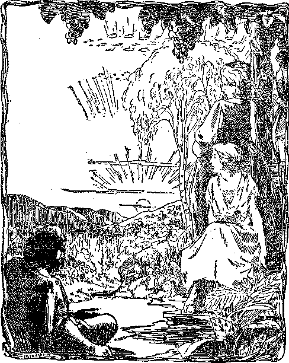

DOES THE SUN
RADIATE HEAT ?.
FANTASY OF
COMING DAYS
COMFORT FOR
' IjQ
5<P a copy
A
’ C anada and .Fore ian .Countries $ l.oO
AjU a va?~
PARABLE OF THE WATER TANK.
Vol. VII Bi-Weekly No. 180
August 11, 1926
OLD 'WORLD DYING
i 1 ,t V
C/ 3PYD BEGINNING
«**—■■■■■■ . ...................... .. . '8^00. .. -.............
Labor and Economics The Pabable of this Wateb Tank
Social and Educational ! "Orthe Earth Earthy” ................ 721
Finance—Commerce—Transportation Pebb and There Throughout the World
Federal Aid in Roadbuilding ....
Boosting the Boulder Dam Project
Engineers Employ Beavers ............... 708
: . Political—Domestic and Foreign
. What American Militarists Are Doing .......... 707
Not an Adjunct of Militarism .............. 707
Objections to Checking Up Aliens. ...
Un-American Proceeding at Daytona ........... 708
Radio In the Next War ................ 709
[ White Men Doomed in Africa .............. 710
t Italy’s Forthcoming Colonial War ............ 710
[{The Clebgy and the Cadet Movement in Canada ....... 719
Agriculture and Husbandry [ _ Uncle Sam Needs Fertilizers .............. 707
Cotton Production in Paraguay . .
. Science and Invention
| .Does the Sun Radiate Heat to the Earth?. ........ 722
| Home and Health
| Solar Plexus — “Brain of the Stomach”
Religion and Philosophy
A Youth’s Attitude Toward Present Evils ......... 725
Studies in “The Harp of God”.............._
! -------. __ _ _ '
Published every other Wednesday at 18 Concord Street, Brooklyn, N. Y., U. S. A., by WOODWORTH, HUDG1NGS & MARTIN
Copartners and Proprietors Address: 18 Concord Street, Brooklyn, N. Y., V. B. A. CLAYTON J. WOODWORTH . . . Editor ROBERT J. MARTIN . Business Manager WM. E. HUDGINGS . , Sec’y and Treas.
Five Cents a Copy—$1.00 A Year Make Remittances to THE GOLDEN AGE Foreign Offices ; British ..... 34 Craven Terrace, Lancaster Gate, London W. 2 Canadian- ......... 38-40 Irwin Avenue, Toronto, Ontario Australasian ....... 405 Collins Street, Melbourne, Australia South African ...... 6 Lelie Street, Cape Town, South Africa
Entered as second-class matter at Brooklyn, N. Y., under the Act of March 3, 1873
..........r-™,- . ,----------—........, — „ .-------,.,-T.rlrn.......----- T ........ ,„, fnmrgr-E., Volume VII Brooklyn, N.Y,, Wednesday, August 11. 192fi Number 18<
What American Militarists are Doing
AN EDITORIAL writer in the Hawaiian
Ilochi makes the following pointed statement;
When it comes to calling people traitors to their country and their God, we might point out that those who are helping to militarize a nation like America are preparing for an ultimate catastrophe just as surely as did the war-lords of Germany, who built up a war machine that made war inevitable and that became a monster which dragged its country down to ruin.
Germans Think America Militaristic
GERMAN paper calls attention to the fact that in American universities training as reserve officers is obligatory, that the General
Staff provides ammunition and rifles and encourages shooting galleries in the basement of schools, that in the summer every citizen can enjoy military training under most agreeable circumstances, and that the number of men in the camps in 1924 was three times the .entire German army. It concludes as a result that America is one of the most warlike nation on earth. Next thing we know somebody in Germany will be getting up fourteen points and wanting to come over here and wage war to make the world safe for democracy.
Purpose of the Espionage Act
ON HIS return from Bermuda Mr. E. V.
Debs, four times candidate for president on the Socialist ticket, but now deprived of citizenship, is reported by the New York Sim as saying:
The constitution states explicitly that Congress shall have no right to abridge freedom of speech. It is the first article in the bill of rights. The espionage law grew out of our entry into the World War. It was directed at spies, yet under the law not a single spy was prosecuted. The actual purpose of the espionage law was to suppress free speech and to silence all those who opposed the war,
Not an Adjunct of Militarism
WE ARE assured by officers of the Boy
Scouts that the sole object of that organization is to make and keep the youth of the land trustworthy, loyal to home, parents and country, helpful, friendly, courteous, kind, obedient, cheerful, thrifty, brave, clean and reverent; that, contrary to the misconceptions of some, it does not have military titles or uniforms, and is not intended as a training ground for militarism.
Federal Aid in Roadbuilding
NCLE SAM is taking a fatherly interest in perfecting for national purposes a little more than 200,000 miles of highway. At present the national expenditures in this direction are about $100,000,000 annually. But as a matter of fact the government is nothing out. The income from state and national taxes on gasoline, automobile registration and licenses, property taxes on automobiles, etc., amounts to more than ten times that sum every year. It pays to build good automobile roads.
Boosting the Boulder Dam Project
THE New York Evening Journal is doing effective work boosting the great Boulder Dam project. It calls attention to the fact that this dam will insure the physical and financial security of Imperial Valley, now one of the richest spots on earth; will make possible more electrical power than is developed at Niagara; and will irrigate an immense area, with estimated returns in taxes every year amounting to more than half of the cost of the entire project.
Uncle Sam Needs Fertilizers '
TN THE United States, where five pounds of J- fertilizer are used to the acre, the wheat crop averages fourteen bushels per acre. In Denmark, w
England, Belgium and Holland, where the amount of fertilizer per acre ranges from three to thirty times as much as in the United States, the wheat crop averages about three times as much per acre. Fertilization pays.
Low Wages Cause Hard Times
REFERRING to the oft recurring periods of hard times in the United States the National Catholic Welfare Conference says, very truthfully and very accurately:
The chief trouble is that our industrial and agricultural system turns out an enormous quantity of goods, but in the producing of it the great majority receive too little money to buy back their share of what they produce.
Installment Idea Spreading
A FEW years ago it was considered a disgrace for anybody to buy anything on the installment plan. Now all this is changing. People are buying all kinds of things, clothing, furniture, homes, automobiles, almost everything in fact, by this method, installment sales in the United States aggregating $5,000,000,000 annually. And governments are paying by installments, too.
Objections to Cheeking Up 'Aliens
AMONG the objections found by the Immigration Committee of the Chamber of Commerce of the United States to the proposed registration of aliens are that this registration would not accord with American principles, would necessitate constant surveillance of a considerable part of the population, would arouse hostility and distrust, would entail large expenditures, and could not be effectively enforced.
Un-American. Proceeding at Daytona
DAYTONA BEACH, Florida, has followed the cruel and mischief-making example of Britain in South Africa, by requiring American citizens, Negroes, some of whom recently fought for their country in France, to carry passes after-dark. By this un-American rule Negroes dti their way home from work have been arrested; and all are deprived of access to their churches, lodges and other social institutions lor night meetings.
Air Mail Service to Dallas
A IR mail service both ways has been opened between Chicago and Dallas, taking in Moline, St. Joseph, Kansas City, Wichita and Oklahoma City on the way. The trip from Chicago to Dallas required twelve hours. Kansas City, which requires eleven and one-half hours by the fastest trains, was reached in four hours and one minute, despite stops at Moline and St. Joseph. Air mail service between New York and Boston started on July 1st.
Musicians Miles Apart Play in Unison
Q TATION WRNY has been treating the public to the novelty of radio transmission of an organ and an orchestra playing simultaneously while the two Were five miles apart. It is believed that this marks the beginning of a time when musicians will be able to broadcast at home, accompanied by orchestra located at any convenient near-by point.
A Benediction Over Dogs
A SUNDAY pictorial contains a picture of a squad of six priests, dressed up in their best petticoats, engaged in the act of blessing about two dozen dogs, prior to the St. Hubert stag hunt. There is nothing in the picture to indicate that this hurt the dogs any, despite the fact that when a late pope blessed the Spanish fleet, the result was that it went to the bottom of the sea.
Mean Trick Played mi a Buzzard
SOMEBODY played a mean trick on a buzzard away back in 1882. He wired a bell to the bird’s neck, and for forty-four years the buzzard played tunes all over the southern states, sending word ahead that it was coming. Recently somebody shot the poor thing and took off the bell, which bore the 1882 date.
Engineers Employ Beavers
THE New York Warid contains an interesting story of the work done by eight beavers and their descendants placed in the area, of the Palisades Interstate Park. Liberated in a swamp area, these little workers in the last few years have inundated fifty or more acres, creating artificial lakes, and thus removing the breeding places of mosquitoes. At the present time the colony numbers about two hundred and the work of dam building proceeds apace.
The Wombat is Not so Good
THE New York Times tells us that the wombat, found in Australia, is not so good a friend to engineers as is the beaver. The wombat, which looks like a little bear, has a pouch like a kangaroo, and is adorned with a tuft of hair on its nose, is a persistent digger, and recently caused a landslide interfering with Melbourne’s water supply. It undermined the aqueduct, and sent twenty million gallons of water to waste.
Fish Trust Dissolved
THE Fish Trust, which controlled the fish business of New York City and dictated prices to jobbers and retailers throughout a wide territory, has been perpetually enjoined, restrained and prohibited from further combinations of the sort. Seventeen firms and twelve individuals pleaded guilty to the government’s charges and were fined a total of $31,000.
President Calles on Conditions in Mexico
TO A committee of twenty-one business men, one of whom was the former governor of Colorado, President Calles of Mexico recently said:
With respect to the religious question, we ars motivated by a liberal point of view. In our minds all beliefs fit in. We respect all cults and are tolerant in every sense. The Mexican Catholic priests have always tried to keep the people in ignorance and vice, because these are the best weapons for the enslaver, the powerful and the clergy. The present government is doing an intense educational work in its attempt to improve the material, spiritual and economic work of the people; and, incredible as it may seem, the priests are the greatest obstacles.
Haitians Object to Losing Country
THE Haitians are objecting to the American
Army of Occupation, claiming the loss of popular elections, the illegal designation of a president, the depreciation of the currency, the maladministration of the national debt, the seizure by American companies of lands that have been held by families for several generations, and the increase of prostitution due to the presence of the military forces.
Haiti Now Has Good Roads
ONE development of the seizure of Haiti has been that the Haitians now have good roads, which is something they never had before. Coffee from the interior is now brought to the coast by automobile, whereas formerly the onlj way of transport was by cart or donkey.
Horrible Conditions in Porto Rico
Santiago Iglesias, secretary of the Pan-Amer* ican Federation of Labor, claims that there are 500,000 unemployed in the one small island, that more than 60 percent of the profits produced in the island are sent away to absentee landlords, that interest rates range from 12 percent to 24 percent, that 40 percent of th© population die illiterates, while the starved peons are ravaged by tuberculosis and other dread diseases. Porto Rico has always been a strictly Roman Catholic country.
Mexico Adopts Metric System
"K/TEXICO has adopted the metric system, and since November 1, 1925, requires that all invoices and shipping documents submitted for clearance to the customs house be made out in that system.
Cotton Production in Paraguay
TN 1922 there were 9,790 acres planted to cot-ton in Paraguay. Two years later the acreage was 48,000. Paraguay possesses the necessary climate, good soil and labor necessary to raise cotton successfully. It is claimed that it has 22,000,000 acres of land available for cotton growing.
Radio in the Next War
WHAT radio will be able to do in the next war is indicated by what recently happened in England. An eminent clergyman, not having anything useful to do, amused himself by broadcasting a mock account of the capture of London by revolutionists, describing the burning of the houses of Parliament and executions in Trafalgar Square. Thousands of his hearers believed every word and were thrown into a panic. In the next war lies will be spread more quickly and more effectively and possibly even more plentifully than they were in the last one, by radio.
'Complete Tie-up of the Press
THE first day of the British general strike resulted in an almost, complete tie-up of the press. The London Times was reduced from twenty-eight pages to a leaflet eight by thirteen inches fin size, run off on a mimeograph. The British government started a newspaper of its own, called the British Gazette, consisting of four pages, two of which were blank. Winston Churchill was editor. It managed to get out 7,000 copies of this by 11: 00 p. m. the first day. The paper contained among other things several items regarding the zoo, which were treated as a great joke all around. The tie-up was complete.
Impossible Transportation Conditions
THE first day of the British strike showed how helpless is civilization when its transportation facilities are crippled. So many automobiles, bicycles and other vehicles crowded into London that the traffic in the streets was beyond. capacity to carry, and barely moved. The only way to get about in the city was to walk. Other incidents of the day were: An increase of four cents per quart in the price of milk, almost total stoppage of travel in all directions by rail, seven of the largest theatres closed, a net weekly loss to the nation of $250,000,000, a few taxicabs turned over, an authorization to the police, subject to order of a Cabinet Minister, to enter any premises forcibly, 250 Americans refused to debark from the Mauretania on arrival at Southampton, and hundreds of Americans endeavored to flee to the Continent.
White Men Doomed in South Africa
THE Manchester Guardian, showing that the fate of South Africa hinges on the settlement of what to do with the Hindu population, declares that these hundreds of thousands of brown men have penetrated into every part of the economic life of Natal. Indian storekeepers live with their wives and families under the shop counters, consume next to nothing, and long hours after his white rival has closed the shutters the Indian’s door is open and the light burning. The Hindus live under the most unsanitary conditions. The whites simply cannot meet the competition they are called on to face. Politics may postpone the trouble for a season, but the white man is doomed.
Mussolini Exterminates Black Hand
1UT ussoniNi has done another thing that cannot fail to make him many friends. With rare courage he demanded of the Sicilian Prefect of Police that he drive out of existence the Mafia,, or Black Hand, which has spread to the four corners of the earth. In the raids which followed 450 persons were arrested, including several officials and well known men and women.
Italy’s Forthcoming Colonial War
TSJUMEBO'US newspapers in Italy, all of them extreme partisans of the Fascisti movement, are freely discussing the colonial war which, they mutually agree, Italy is about to wage. In a recent letter to the aviator Marquis de Pinedo, Mussolini himself made reference to what he termed “the coming day” in such language as to leave no doubt that he has a day of conquest in mind. The Italian press are discussing whether the war will be a war against or a Avar side by side with France. It is freely predicted that it could only be the latter if France bought Italy by a previous surrender to her of half her colonies, or consented to combine with Italy as a single state, loyally recognizing Borne as the capital. Asia Minor is most freely predicted as the probable seat of the conflict when it conies.
Mussolini’s Concessions to Papacy
TVTussolini has placed crucifixes in all govern-1¥JL ment offices, ordered the Te Deum to be sung at all government functions, put an end to Masonry, introduced religious services in the schools under the tutelage of the Church, required the teachers to graduate in religious pedagogy at some Church college, and finally has increased the Italian state’s pay to the clergy. It is freely predicted that the temporal power will be restored to the Pope within two years.
The Stuff of Which Rif flans are Made
THE stuff of which Biffians are made is disclosed by the feat of Hammouch Ben Iladge in carrying a dispatch seventy miles over rough terrain between sunset and sunrise. It is believed that there are few athletes in the civilized world that could equal this record. Hammouch made a mile every seven minutes throughout the- night.
THERE was a certain very dry land,"the people whereof were in sore need of water.
'And they did nothing but to seek after water from morning until night, and many perished because they could not find it.
Howbeit, there were certain men in that land who were more crafty and diligent than the rest, and these had gathered stores of water where others could find none, and the name of these men was called capitalists. And it came to pass that the people of the land came unto the capitalists and prayed them that they would give them of the water they had gathered that they might drink; for their need was sore. But the capitalists answered them and said:
“Go to, ye silly people! Why should we give you of the water which we have gathered? For then should we become even as ye are, and perish with you. But behold what w’e will do unto you. Be ye our servants and ye shall have water.”
And the people said, “Only give us to drink and we will be your servants, we and our children.” And it was so.
Now the capitalists were men of understanding, and wise in their generation. They ordered the people who were their servants in bands with captains and officers, and some they put at the springs to dip, and others did they make to carry the water, and others did they cause to seek for new springs. And all the water was brought together in one place, and there did the capitalists make a great tank for to hold it, and the tank was called the Market; for it was there that the people, even the servants of the capitalists, came to get water. And the capitalists said unto the people:
“For every bucket of water that ye bring to us, that we may pour it into the tank, which is the Market, behold! we will give you a penny; but for every bucket that we shall draw forth to give unto you that ye may drink of it, ye and your wives and your children, ye shall give us two pennies, and the difference shall be our profit, seeing that if it were not for this profit we would not do this thing for you, but ye should all perish.”
. And it was good in the people’s eyes; for they were dull of understanding. And they diligently brought water unto the tank for many days; and for every bucket which they did bring, the capitalists gave them every man a penny; but
(From Edward Bellamy's "Equality”}
for every bucket that the capitalists drew forth from the tank to give again unto the people, behold! the people rendered to the capitalists two pennies.
And after many days the water tank, which was the Market, overflowed at the top, seeing that for every bucket the people poured in they received only so much as would buy again half a bucket. And because of the excess that was left of every bucket, did the tank overflow; for the people were many. But the capitalists were few, and could drink no more than others. Therefore did the tank overflow.
And when the capitalists saw that the wrnter overflowed, they said to the people:
“See ye not the tank, which is the Market, doth overflow? Sit ye down, therefore, and be patient; for ye shall bring us no more water till the tank be empty.”
But when the people no more received the pennies of the capitalists for the water they brought, they could buy no more water from the capitalists, having naught wherewith to buy. And when the capitalists saw that they had no more profit because no man bought water of them, they were troubled. And they sent forth men in the highways, the byways, and the hedges, crying, “If any thirst let him come to the tank and buy water of us; for it doth overflow.” For they said among themselves, “Behold, the times are dull; we must advertise.”
But the people answered, saying, “How can we buy unless ye hire us, for how else shall we have wherewithal to buy? Hire ye us, therefore, as before, and we will gladly buy water, for we thirst; and ye will have no need to advertise.” But the capitalists said to the people: “Shall we hire you to bring water when the tank, which is the Market, doth already overflow? Buy ye, therefore, first water; and when the tank is empty, through your buying, we will hire you again.” And so it was because the capitalists hired them no more to bring water that the people could not buy the water they had brought already; and because the people could not buy the water they had brought already, the capitalists no more hired them to bring water. And the saying went abroad, “It is a crisis.”
And the thirst of the people was great; for it was not now as it had been in the days of their fathers, when the land was open before them, for every one to seek water for himself, seeing that the capitalists had taken all the springs and the wells and the water therein, and the vessels and the buckets, so that no man might come by water save from the tank, which was the Market, And the people murmured against the capitalists, and said: “Behold the tank runneth over, and we die of thirst. Give us therefore of the water, that we perish not.”
m
But the capitalists answered: “Not so. The water is ours. Ye shall not drink thereof unless ye buy it of us with pennies.” And they confirmed it with an oath, saying’, after their manner, “Business is business.”
But the capitalists were disquieted that the people bought no more water, whereby they had no more any profits; and they spake one to another, saying, “It seemeth that our profits have stopped our profits; and by reason of the profits we have made, we can make no more profits. How is it that our profits are become unprofitable to us, and our gains do make us poor? Let us therefore send for the soothsayers, that they may interpret this thing unto us”; and they sent for them.
Now, the soothsayers were men learned in dark sayings, who joined themselves to the capitalists by reason of the water of the capitalists, that they might have thereof and live, they and their children. And they spake for the capitalists unto the people, and did embassies for them, seeing that the capitalists were not a folk quick of understanding, neither ready of speech.
And the capitalists demanded of the soothsayers that they should interpret this thing unto them, wherefore it was that the people bought no more water of them, although the tank was full. And certain of the soothsayers answered and said, “It is by reason of overproduction”; and some said, “It is glut.” But the signification of the two words is the same. And others said, “Nay, but this thing is by reason of spots on the sun.” And yet others answered, saying, “It is neither by reason of glut, nor yet of spots on the sun, that this evil hath come to pass, but because of lack of confidence.”
And while the soothsayers contended among themselves, according to their manner, the men of profit did slumber and sleep; and when they awoke they said to the soothsayers: “It is enough. Ye have spoken comfortably unto us.
Now gfi’ ye and speak comfortably likewise unto this people, so that they be at rest and leave us also in peace.”
But the soothsayers, even the men of the dismal science (for so they were named of some) were loath to go forth to the people lest they should be stoned; for the people loved them not. And they said to the capitalists:
“Masters, it is a mystery of our craft that if men be full and thirst not, but be at rest, then shall they find comfort in our speech even as ye. Yet if they thirst and be empty, find they no comfort therein, but rather mock us; for it seemeth that unless a man be full our wisdom appeareth unto him but emptiness.” But the capitalists said: “Go ye forth. Are ye not our men to do our embassies ?”
And the soothsayers went forth to the people and expounded to them the mystery of overproduction, and how it Avas that they must needs perish of thirst because there was overmuch water, and how there could not be enough because there was too much. And likewise spoke they unto the people concerning the sunspots, and also wherefore it was that these things had come upon them by reason of a lack of confidence. And it was even as the soothsayers had said; for to the people their wisdom seemed emptiness. And the people reviled them, saying, “Go up, ye bald-heads! Will ye mock us? Doth plenty breed famine? Doth nothing come out of much?” And they took up stones to stone them.
And when the capitalists saw7 that the people still murmured and would not give ear to the soothsayers, and because also they feared lest the people should come upon the tank and take of the Avater by force, they brought forth to them certain holy men (but they were false priests), who spake unto the people that they should be quiet and trouble not the capitalists because they thirsted. And these holy men, who Avere false priests, testified to the people that this affliction was sent to them of God for the healing of their souls; and that if they should bear it in patience and lust not after the water, neither trouble the capitalists, it Avould come to pass that after they had given up the ghost they would come to a country where there should be no capitalists, but an abundance of water. Howbeit, there were certain true prophets of God also; and these had compassion on the people, and would not prophesy for the capitalists, but rather spake constantly against them.
Now, when the capitalists saw that the people still murmured and would not be still, neither for the words of the soothsayers nor for those of the false priests, they came forth themselves unto them, and put the ends of their fingers into the water that overflowed in the tank and wet the tips thereof. And they scattered the drops from the tips of their fingers abroad upon the people who thronged the tank, and the same of the drops of water was charity; and they were exceedingly bitter.
And when the capitalists saw yet again that neither for the words of the soothsayers, nor for those of the holy men who were false priests, nor yet for the drops that were called charity, would the people be still, but raged the more, and crowded upon the tank as if they would take it by force, then took they counsel together and sent men privily forth among the people. And these men sought out the mightiest among the people and all who had skill in war, and took them apart and spake craftily with them, saying,
“Come, now, why cast ye not your lot in with the capitalists? If ye will be their men and serve them against the people, that they break not in upon the tank, then ye shall have abundance of water, that ye perish not, ye and your children.”
And the mighty men and they who were .skilled in war hearkened unto this speech and suffered themselves to be persuaded; for their thirst constrained them. And they went within unto the capitalists and became their men; and staves and swords were put into their hands and they became a defence unto the capitalists, and smote the people when they thronged upon the tank.
And after many days the water was low in the tank; for the capitalists did make fountains and fish-ponds of the water thereof, and did bathe therein, they and their wives and their children, and did waste the water for their pleasure.
And when the capitalists saw that the tank ■was empty, they said, “The crisis is ended”; and they sent forth and hired the people that they should bring "water to fill it again. And for the water that the people brought to the tank they received for every bucket a penny but for the water which the capitalists dre^ forth from the tank to give again to the peoph they received two pennies, that they might hav< their profit. And after a time did the tank again overflow even as before.
And now, when many times the people had filled the tank until it overflowed and had thirsted till the water therein had been wasted by the capitalists, it came to pass that there arose in the land certain men who were called agitators, for that they did stir up the people. And they spake to the people, saying that they should associate, and then would they have no need to be servants of the capitalists and should thirst no more for water. And in the eyes of the capitalists were the agitators pestilent fellows ; and they would fain have crucified them, but durst not for fear of the people.
And the words of the agitators which they spake to the people were on this wise:
‘Tie foolish people, how long will ye be deceived by a lie, and believe to your hurt that which is not? For behold all these things that have been said unto you by the capitalists and by the soothsayers are cunningly devised fables. And likewise the holy men, who say that it is the will of God that ye should always be poor and miserable and athirst, behold! they do blaspheme God and are liars, whom He will bitterly judge, though He forgive all others. How cometh it that ye may not come by the water in the tank? Is it not because ye have no money? And why have ye no money? Is it not because ye receive but one penny for every bucket that ye bring to the tank, which is the Market, but must render two pennies for every bucket ye take out, so that the capitalists may have their profit? See ye not how by this means the tank must overflow, being filled by that ye lack and made to abound out of your emptiness? See ye not also that the harder ye toil, and the more diligently ye seek and bring the water, the worse, and not the better it shall be for you by reason of the profit, and that forever?”
After this manner spake the agitators for many days unto the people, and none heeded them, but it was so that after a time the people hearkened. And they answered and said unto the agitators:
“Ye say the truth. It is because of the capitalists and of their profits that we are in want, seeing that by reason of them, and their profits we may by no means come by the fruit of our labor, so that our labor is in vain; and the more we toil to fill the tank the sooner doth it overflow, and we may receive nothing because there is too much,'according to the words of the soothsayers. But behold, the capitalists are hard men, and their tender mercies are cruel. Tell us if ye know any way whereby we may deliver ourselves out of our bondage unto them. But if ye know of no certain way of deliverance, we beseech you to hold your peace and let us alone, that we may forget our misery.”
And the agitators answered and said, “We know a way.”
And the people said, “Deceive us not; for this thing hath been from the beginning, and none hath found a way of deliverance until now, though many have sought it carefully with tears. But if ye know a way, speak unto us quickly.”
Then the agitators spake unto the people of the way. And they said:
“Behold, what need have ye at all of these capitalists, that ye should yield them profits upon your labor? What great thing do they, wherefore ye render them this tribute? Lo, it is only because they do order you in bands and lead you out and in and set your tasks and afterward give you a little of the water yourselves have brought, and not they. Now, behold the way out of this bondage! Do ye for yourselves that which is done by the capitalists; namely, the ordering of your labor, and the marshalling of your bands, and the dividing of your tasks. So shall ye have no need at all of the capitalists and no more yield to them any profit, but all the fruit of your labor shall ye share as brethren, every one having the same: and so shall the tank never overflow until every man is full and would not wag the tongue for more. And afterward shall ye with the overflow make pleasant fountains and fishponds to delight yourselves withal, even as did the capitalists; but these shall be for the delight of all.” . And the people answered, “How shall we go about to do this thing? For it seemeth good to us.”
And the agitators answered, “Choose ye discreet men to go in and out before you and to marshall your bands and order your labor, and these men shall be as the capitalists were. But behold, they shall not be your masters as the capitalists are, but your brethren and officers who do your will; and they shall not take any profits, but every man his share like the others, that there may be no more masters and servants among you, but brethren only. And from time to time, as ye see fit, ye shall choose other-discreet men in place of the first to order the labor.” .
And the people hearkened, and the thing was very good to them. Likewise seemed it not a hard thing. And with one voice they cried out, . “So let it be as ye have said; for we will do it!”
And the capitalists heard the noise of the shouting and what the people said, and the soothsayers heard it also; and likewise the false priests and the mighty men of war, who were a defence unto the capitalists. And when they heard they trembled exceedingly, so that their knees smote together, and they said one to another, “It is the end of us!”
Howbeit, there were certain true priests of the living God who wmuld not prophesy for the capitalists, but had compassion on the people; and when they heard the shouting of the people and what they said, they rejoiced with exceeding great joy, and gave thanks to God because of the deliverance.
And the people went and did all the things that were told them of the agitators to do. And it came to pass as the agitators had said, even according to all their words. And there was no more any thirst in that land, neither any that was an hungered, nor naked, nor cold, nor in any manner of want. And every man said unto his fellow, “My brother,” and every woman said unto her companion, “My sister”; for so were they with one another as brethren and sisters which do dwell together in unity. And the blessing of God rested upon that land forever.
“I never saw a sadder thing In all the city’s strife,
Than that worn host of ragged men Who waited there for life.
They did not ask for lordly things, For temples or for lands;
“They only asked for right to use The glory of their hands.
They did not ask for alms or gold, Nor things of lordly worth;
They only asked the right to share The labor of the earth.”
A Fantasy of the Coming Days
THE evening sunlight was giving forth its splendor behind the purple hills that were traced so clearly against the orange-colored atmosphere. The high clouds were as pearls set in the fading light of the upper sky. The sun had just descended out of sight behind those western hills, after a glorious and perfect day.
Standing by the cottage, or shall I say mansion, for such it seemed, were two people looking toward the west; Edward and Winnifred; both the outward expression of perfect health and beauty, a unity of strength and meekness. [After feasting upon the scene for a few moments, Edward turned to his companion and expressed the wish that his favorite artist, a 17th century master, might be there to witness it, exclaiming:
‘What a scene for Loretto! How he would have reveled in this harmony and contrast of shade and color, perfect to the utmost degree I” And then he added, “Yet how trivial is man’s attempt to portray these glories of nature in a few colored pastes.”
Being constant admirers of things beautiful, and having the energy of youth at its best, these two could follow God’s works in minutest detail. No wonder the scene brought to their minds one whose work on canvass and in stone resembled, even though but feebly, God’s work in nature! What wonder that they wished the master artist might be there to view with them the present going down of the. sun!
Just then Edward, glancing in the opposite 'direction, saw a human form in the distance. Being unable to distinguish his outline clearly, he mused: “Who is this, Winnie, coming from the east? Some stranger, surely, but looks like some one we know. Why! It’s Loretto, the famous painter himself! It must be he. What a coincidence!”
“Can you inform me as to the way to the city?” the stranger inquired.
“Friend, we can; but first step inside and we will make you welcome. Are you not Loretto, the painter?” “I am Loretto,” he answered. Somewhat puzzled, he followed them into the cottage. “Where am I? This reminds me of the old, old days of delight and toil; I seem surrounded with friends,” Loretto cried as several small pictures, hanging tastefully on the wall, drew his attention.
By F. Bradshaw {England}
These are reproductions of your frescoes from Italy; and here some of your works in stone,” explained Edward. “I dare say they remind you of your shepherd days, with theix peaceful as well as wolflike moments.”
“Where am I?” again inquired Loretto in wonderment.
“You are on earth, my friend,” said Edward, “but this is now the golden age; and at the wish of friends you have again entered upon a human career. But conditions are now righteous. Brother is no longer against brother; love is the ruler of all hearts, and sweet accord must everywhere prevail. Stay a little while and you shall go on to the city on the morrow, before the sun is at its height.”
Loretto, still bewildered, accepted the hospitality. Glancing around in childlike wonderment, he remarked:
“How splendid everything is! The garden, the house! What a happy abode; a palace, yet small. I am almost lost in its surroundings; yet how cozy and how comfortable!”
“Yes, we are very comfortable and happy here. We grow most of our own food. Our meals are simple; there is no want, and we have every opportunity to be happy in the fullest sense of the word. And you see other mansions peeping up amongst the trees round about Building, architecture and the other arts are progressing slowly but surely to a magnificent perfection. Each structure is a true outward expression of the builder, and all are built with loving care.”
Loretto arose early on the morrow, so eager was he to feast upon the beautiful landscape. “The hills appear to be enriched with jewels!” he exclaimed in ecstacy. “I do feel like seeing a little more of this wonderful world before the sun is at its height. So with your permission I will walk along in the fresh morning air.”
“You cannpt mistake the city,” said Winnifred, pleased at her guest’s evident enjoyment of the surroundings. “The road is in perfect condition and will lead you there. But be sure to let us have your company by the evening.”
With the blessing of the two, Loretto went along the highway to the city. Finally he came to a hill overlooking a wide valley, and what a sight to behold! “Surely this is the city,” he mused; “but different from any I ever saw before.” Tower upon tower arose upward from
the depth of the valley. Purple and gray windings, extending up into the sky, it seemed to him. What a sight!
A .short rest to enjoy the surroundings seemed to the bewildered Loretto to be opportune. The buildings were wonderful in their slim proportions, as they rose from the gray depth of the valley into the sunlight above. And the depths seemed to have a light of their own not of the sun.
“May we take you onward, friend?” came the sound of a clear voice from behind. On looking around Loretto saw a magnificent chariot which had apparently come from nowhere.
“I thank you, friend/’ he replied; “I did intend to go on into the city, but was first enjoying the scene at the distance. I will gladly accompany you. But how did you get here? I heard nothing.”
“We travel very quietly,” said the stranger in the chariot. “We travel exceedingly fast, but noiselessly and with perfect control.”
They skimmed along at an amazing speed, smooth as glass. Nearer and nearer came the city, with steeples and pinnacles ascending higher and higher from the silvery haze of the river into the glorious sunlight above.
Loretto alighted in a great thoroughfare. How strangely was it illuminated! And chariots not of horses but propelled by some unseen force traversed the smooth streets. Though he at first thought that danger was lurking in every step, yet he soon saw that no accidents occurred. Everything was perfectly managed; chariots were under perfect control.
As he walked down the wide thoroughfare he heard someone call: “Welcome, friend. How would you like to make a journey over the city?” Loretto turned and faced another stranger, who had a queer-looking chariot that resembled the body of a bird with outstretched wings.
Impelled by the good will and kindly manner of the occupant, Loretto promply mounted the proffered chariot. They were soon ascending above the earth! The chariot, stretching its wings in. magnificent fashion, passed above the sparkling pinnacles, the purple depths, where other chariots passing in numberless and endless variety could be seen below.
“This all seems so strange. The golden age and these.marvels, are they not very nerve racking?” suggested Loretto to his new-found friend.
“No, much to the contrary,” answered his informant. “There is no enmity between man and man; all is peaceful. There is no commercial spirit, yet the inventive genius of man is much to the fore. You wonder at the lighting of the avenues. With these pinnacles §nd towers the avenues below would be very dark; but now with the invention of a new light, we can get about in comfort. We spend a few hours each day to attend the various machines; everybody is willing, and the world’s work goes smoothly on.”
As the chariot descended a little closer to the 1 city,, a palace yard could be discerned. Loretto wondered at seeing there a number of people dressed in strange dark attire and with what seemed begrimed faces, walking leisurely and cheerfully across the lawn.
Alighting again, this time they found themselves opposite what Loretto discerned to be a palace of palaces, because of its surpassing grandeur of color and its embellishments of pomegranates, vines, cherubim, eagle, winged lion, winged calf, and winged man. Stepping inside he saw a huge concourse of people. A voice seemed to come from somewhere in the center. A perfect calm reigned as. the voice gave out the message of the law, “Love ye one another.”
Approaching one end of the hall Loretto found a number of small tables and a counter. In the center of the counter was a moving belt which carried dishes of fruit, bread and other edibles, mostly uncooked natural foods. As these moved along they were taken up by respective purchasers. No one was in attendance to prevent stealing or cheating. Speaking your order into a machine a card appeared, giving the price of the products, which seemed exceedingly reasonable. In due course the food ordered came along the moving counter, and the purchaser took it and then dropped the money into a box provided for the purpose. Seeing Loretto’s apparent embarrassment, a fellow visitor proffered the necessary value, and he enjoyed a hearty and healthful meal.
Loretto mused on the foregoing events, wondering and marveling at the strange pieces of machinery which he had witnessed. What a saving there seemed in this arrangement I Would the meal have been any pleasanter if served by a smiling and friendly waiter? Who made ths machines? How unusual it all seemed, and so greatly in contrast to the sheepfold and markets he.remembered from his 17th century days. But he quickly recalled that this is now the golden age, and that his former experiences were causing him as yet to be out of touch with everything.
Leading from the hall of this palace where he stood was a long corridor with vaulted ceiling, replete with figures and palms hewn in stone and embossed in colors, and illuminated with the same strange light that glorified the entire city. It all seemed so strange; though stranger yet were the people flitting here and there in horseless chariots- which slipped along as on glass, and the other chariots which flew through the air like birds.
Then, too, there was a moving pavement for pedestrians. The people in the corridor, conversing in friendly tones, were all moving in one direction on one of those pavements. Loretto soon found himself amongst them and moving ■with them. The 'walls and ceiling of the palace were one feast of-artistic color, portraying the noblest characters of history. These were indeed a pleasure for Loretto to behold. The work was perfect, and the lighting effects enabled them to be seen in all their artistic glory.
The end of the corridor reached, there was a small square room. When Loretto and the others stepped into this room there seemed to be put in motion some hidden machinery, and the room began moving upward and upward. Gallery after gallery, thronged with happy people, Loretto passed on his way upward through the palace, until they finally came to a standstill in the bright sunlight.
Stepping from the elevated room he entered another and larger room, with large cabinets arranged in regular succession, side by side.
A general hum, as of many subdued but persistent voices, filled the room. What was it all about? Loretto could see only one person to speak to; and he seemed to be in attendance at these cabinets.
“Good afternoon, friend. I perceive that you are a stranger here and are wondering at the appearance of this room,” he said to Loretto in kindly tones. “A number of visitors find their way up here when looking around the city. This is the room where the power is generated for lighting the avenue and driving the machines which move the counter and pavements and other things about the city. We are on the top of the highest pinnacle in the city, and therefore this is the best place from which to obtain the force from the air by which the power is generated for the apparatus in each of these cabinets you see about this room. The metal ornament' at the apex of the pinnacle receives the force, and it is conducted in various unseen ways through these cabinets.”
Loretto found the attendant and the room very interesting, and spent much time looking around. Returning to the avenue below, and feeling ready for a more quiet place, free from so many surprises, Loretto inquired the way to the outskirts of the city. No sooner had he spoken than he was gathered up into a chariot and quickly, though tenderly, placed on the very spot whence he first saw the city.
How beautiful were the hedgerows, the trees, the mansions, though small, peeping up above the trees; how pleasant the natural light! Walking was a pleasure, though progress was not so fast as by the horseless chariot. Loretto arrived back at the house of his friends at the setting of the sun.
“And how does our friend like the city?” asked Edward and Winnifred.
Ht is wonderful, magnificent! But may I inquire what it is all about ? How happy everybody seemed in their passing to and fro, so different from what I have been used to. The whole thing is so marvelous and so new to me that I cannot understand it. Is this quick passing here and there necessary to the well-being of mankind? Why those men dressed in dark attire and with begrimed faces, whoni I saw in a castle yard ? They seemed cheerful and happy, but why are they dressed so differently, from all others ? And the voice giving out the law in the palace; that was so strange.”
Edward laughed good-naturedly. “Those men in the dark attire are doing their bit to make the inventions that seem necessary for the general welfare. Each man does his allotted time each day or week. There has not yet been found anything to take the place of human labor in the first instance. But it is pleasant; no hardships on anybody; just healthful, enjoyable exercise. We are yet in the early stage of the golden age; there are still some relics of the past; and there may be several years yet before everything is perfect. In the palace of the law the voice is transnjitted from some distance over the seas.
The law is publicly broadcast for our guidance, that we may have health and happiness.”
“I enjoy the city, but like the quiet countryside most/’ said Loretto, after pondering thoughtfully; “and I assume that you do also, seeing that you have built your house in this delightful corner.” Edward and Winnifred nodded in assent.
The sun was again setting in the west. The three friends enjoyed the inspiring scene in quiet wonderment for some time, as they sat at ease in the wings of the vine-clad porch. '
“All the dwellings seem to be splendidly situated, and enclosed with shrubbery and flowers, each of a somewhat different design; portraying, I assume, the mind of the dweller,” said Loretto, finally breaking the silence in his impetuous fervor. “But I notice over there is one building, larger and more magnificent than the rest. It belongs to someone of importance, I suppose.”
“We are all servants of the same Master now. However, that building will interest you; similar ones are spotted throughout the country,” said Edward.
They enjoyed the scene In quiet, by the vine-clad porch
Whilst he thus spake the sweet intonation of a cultured human voice, accompanied by the deep strains of a wonderful organ, came over the calm air in the purple sunset. Edward hastened to explain the strange phenomenon to his guest: ‘
“There! singing again as usual at the setting of the sun! The music comes from the building which you have just pointed out. The building is also used for the art of writing poems in color and in stone, as well as in melodious sounds. The a.rt of making the home beautiful is keenly followed by all. These places are built with great care, and are specially adapted to the housing of the arts. The personal touch is in everything. Every invention for organ or piano is designed to augment the human faculties. .
“All have an arrangement -whereby they can hear the music in their homes, as it is broadcast from yonder building. These instruments are made during many hours of careS^l labor, and need careful adjusting, though the result as yet lacks the personal touch that is obtained ■when in the same room with the speaker or instrumentalist.” As Edward finished, the friend’s countenance beamed with happy anticipation.
“There is something different here all the time. I am well pleased; and if you like, I will make my home amongst you,” said Loretto gleefully.
“Friend, we bid you welcome amongst us, and trust you will build some beautiful dwelling, pointing tower-like upward. Time is plentiful, and there are willing hands to assist you. A few animals of fine form and physique will aid us in the heavier work,” responded Edward.
“Do you visit the palace of the law for instruction, that you may walk according to it?” inquired Loretto.
“We do, and following humbly the commandment, “Love ye one another,’ we find happiness in its truest form,” quickly declared Winnifred; “and often in the evening comes a visitor, one of God’s messengers, with help and guidance for every step, whose words are as the breath of life to every one around.”
The singing faded away with the waning light, and the friends retired to rest in the calm
The Clergy and the Cadet Movement in Canada • By Our Canadian Correspondent
THE Great War does not appear to have taught a lesson to the clergy, unless it be to satisfy them that they can hope to keep their jobs only through the efficiency of an army, and that realizing the unpreparedness in 1914, they think it wise and a part of their commission to see that when the next war breaks out their work as recruiting agents will be easier: as witness the following resolution passed at a meeting of the Church of England Synod of the Diocese of Toronto as reported in the Mail and Empire, Toronto:
Members of the Synod left no doubt as to their attitude on cadet training in the public and high schools of the province, when during the afternoon session Rev. G. M. Barrow gave notice of motion that this synod hereby places on record its hearty and cordial approval of the system of cadet training in the primary and secondary schools, and endorses the same as an excellent method of physical training and as an efficient means of inculcating a sound spirit of patriotism and discipline in the youth of the present day. The motion was received with enthusiastic applause.
When the motion was put at the closing session of the synod, Rev. G. M. Barrow, in introducing the subject, laughingly remarked that he did not wish to be understood as trying to interfere with the work of the League of Nations.
“I am not bringing this forward in a militaristic manner. I desire to do it for the benefits to be derived from physical training, and as an efficient means of inculcating sound patriotism. What is needed more than anything else in the youth of today is discipline. I believe that the security of the future for the men of the country lies not in training them to be soldiers but to act on the sound of the word.”
The Telegram of Toronto in its report says: With the full weight of his authority Bishop Sweeny declared: “1 am enthusiastic over this resolution, it is a fine thing. [Hear I Hear!] If I have any erectness of physique I owe it to the cadets; being an officer’s son, my father saw to it that I held myself erect and that I attended all the drills.
“I will be awfully sorry if this synod turns out to be a lot of old ladies who don’t approve of this sort of thing.”
After an amendment had been voted down the Rev. II. Ben Oliel of Collingwood, wearing a military button on his ministerial coat, speaking to the motion said:
“Most of the people, especially those who were nearer the front than Canada, could remember the year 1916.
It was a terrible nightmare. We were simply holding ourselves, waiting and enduring agonies, while manj others were falling, simply because we were not prepared ; and we do not desire that any evil influence should bring upon ourselves, or the Empire or Christian civilization, the agony of 1916. Therefore let us in all manliness and in sincerity support every good thing that will support Christianity and Civilization.”
The report adds:
Those supporting the main motion were in many cases men who wore the returned man’s button on their ministerial coats, while those against were in the main younger men.
That the clerical support is not confined to the Church of England is. evident from the following report in the Toronto Daily Star:
The general assembly of the United Church is lining up to follow the example of the Toronto Synod of the Anglican church and debate fully the question of cadet training in primary and secondary schools in this country. But unlike the Toronto Anglican Synod, which was more or less unanimously in favor of cadet training when the vote was taken yesterday, the general assembly will probably be split wide open on the issue; with the final vote showing the church opposed to the Anglican view and condemning cadet training as too militaristic. One of the strongest proponents of cadet training is Rev. Dr. W. H. Hincks, of High Park United Church, who will fight for preparedness in the general assembly as against “piteous sentimental pacifism”.
These are the professed ambassadors of the Prince of Peace 1
In this connection we are reminded that in 1923 the Presbyterian Witness quoted General Haig, Commander-in-Chief of the British forces in France, as saying, “It is the business of the churches to make my business impossible.”
Regarding Evolution, a writer in the Toronto Globe gives the following information:
About 1916, when Professor Leuba sent out a questionnaire to American Scientists (?) asking them if they believed in a personal God, of the less eminent scientists fifty-nine percent of biological, and sixtyeight percent of the psychological scientists said that they did not; and in the more eminent scientists the percentage was greater, being eighty-four percent of biologists and eighty-seven percent of psychologists who were Agnostics. Professor Leuba also sent questionnaires to the students of nine large colleges and the answers showed fifteen percent of the freshmen and forty-five percent of the graduating class had abandoned belief in orthodox religion.
During a four-day mission conducted on behalf of the Jews in Knox Presbyterian Church, Toronto, by Kev. Fred Clark and Rev. George Bell, Mr. Clark made the following statement: “The church is stagnant, and has even contempt for the Jews, when it should be holding out its hand to them.” He told of a prophecy made by Dr. Gratton in one of his books that 1917 would be a year of great happenings for God’s ancient people, and of the carrying out of that prophecy when Allenby took Jerusalem. He would have been nearer the mark had he hit upon 1918, when the Jews were given back their land under the Balfour Declaration, at the full end of “Israel’s double”, according to the prophets of old. '
The watchword of the day seems to be “Probe”. From the freight rate probe we learn that seventy-one percent of Canadian grain left Atlantic ports via United States of America last year. Early in the session of the Commission, Commissioner Oliver interrupted a witness to ask: “Are we in Canada to produce wheat for American railroads to carry?”
The probe in the Customs Department reveals wholesale smuggling, coming and going, with the connivance of customs officials on the Canadian side of the border who have been waxing rich at the public expense.
Then there was a probe into the election frauds in the West which revealed that one hundred and eleven votes cast for a conservative candidate were credited to the liberal candidate, whereby, the latter was declared elected and holds his seat in Parliament in spite of the exposure. And so it goes. .
The Toronto Star in reviewing a recent book “Twenty-Five Years 1892-1916” by Viscount Grey of Falloden, as a contribution “to the already voluminous and ever-growing literature of Armageddon”, quotes him as saying:
Even now, with all the experience of war behind us. It is doubtful whether Europe is penetrated with a sense that war must be. prevented in future, and that this must be the common purpose of all nations—learn &r perish is the rule for nations as for individuals. The future, the life of European civilization, well depends Upon whether a wiser or more instructed spirit prevails, [f it does not, our present civilization will perish, as others have done before it, and the future progress of mankind will depend on the rise of something new, some human agency outside Europe, and perhaps not of European race.
How surprised he will be when he realizes that his “something new” is the age-old story of the kingdom of God, which is at our very doors and ready to upset all “human agencies” in their efforts to get back to normalcy!
During the annual convention of the Canadian Manufacturers Association in session at Toronto, the Globe, writing editorially of the opening address of the President, said:
President Fortier of the Canadian Manufacturers Association said in his report at the annual convention that his organization “does not work to its own selfish interests, but to the good of the country”. The average business man will agree that the country cannot develop successfully on one side. What helps the whole helps the part, although there may be differences of opinion as to how best to get at it.
Yet, in summing up conditions and referring to the many favorable factors noted in Canada’s progress as a whole during the past year, he expressed himself as not satisfied with business. Railway earnings have increased; building permits are growing; bank clearings and bank deposits are greater; the value of the field crops he finds nearly $160,000,000 better in 1925 than in the previous year; farmers have paid their debts, and are buying more manufactured goods; there was a continued improvement in international trade. Still, there is something wrong with business. Money is piling up in the banks instead of being used to develop trade.
While the general tone of the press is optimistic and cpiotes statistics showing improved conditions in some lines, if to the man on the street one puts the question, “How’s business?” the answer is as likely as not to be “Rotten”, or “There ain’t none”. But they go on hoping for the best, as the impression seems to prevail that matters could not well be worse for the average man, however well they may look to “big business”.
Labor says: ,
The Great Lakes are now three f'eqt below their normal level, low water is greatly hampering navigation on the Canadian as well as on the American side; and it is claimed that much of this fall in level is due to what is plainly called the “Chicago Steal”,
At Ottawa the other day, a resolution was introduced in Parliament, calling upon the Canadian government to take “drastic action” to stop this illegal diversion,. During the debate, it was openly charged that the United States was indifferent because the United States is huge and powerful, and Canada relatively small.
Much interest has lately been aroused by 'Jack Miner at his wild bird sanctuary at Kingsville, near Windsor, Ontario, in his tagging migratory game birds with a view to studying their habits. He is the only man who has caught and tagged the “wild Canada goose” and studied its exact emigration. In two days recently he caught and tagged 411 Canada geese, placing loosely on the leg of each an aluminum tag containing the naturalist’s postoffice address on on< side, and on the opposite face a verse of Scripture. Jack, however, is by no means a religious fanatic, but uses this unique means of passing the Word of God along to the Eskimos and Indians of the far north. While doing this he discovered in this lot one which had been tagged previously in 1918. Thus in this way he is gaining emigration facts of the birds that no man or combination of men ever obtained.
440f the Earth Earthy” By B. D. Clark
APPARENTLY there are some Christians who either have the wrong slant on things in general, or else have a one-track mind. Is it impiety to write and know of things mundane ? Rather does it seem to me that it would be the height of folly not to do so. The Creator has constituted us living, sentient beings; our bodies are of the earth, earthy; and we of necessity must give some thought and time to those things of an earthly nature. .
How many have ever stopped to think that every morsel we eat, every bit of clothing we wear, our household goods of whatever kind they are, the ear or the train we take to and from our work, the pen, pencil, typewriter, the goods handled over the counter in every store, and every machine and its products turned out in the day, the various documents of all business—• that everything wo touch, • in fact, is of the earth? Not one single article can be named (unless it be a meteorite), that did not have its origin in Mother Earth.
The Creator made this planet, and in due time conditions became conducive for man to live upon it. As is logical, the Creator would want intelligent creatures for earth’s inhabitants. Since this planet was made for man’s use, then man should use all its elements and forces for his benefit and welfare. For him not to do so would be ungrateful, and a reflection upon his intelligence.
Those Christians who hold the view that the consideration of mundane things is impious should ask themselves where The Golden Age comes from. A thousand and one mundane items enter into its publication. Printing machines had to be provided. These are made of iron and steel. The iron had to be mined. Then it traveled on cars and was taken to the furnaces; but coal had to be mined to run these furnaces. Then it was run into ingots, and moulded into various-sized slabs. Designers and draftsmen made blue prints of the machine on paper, then each blue print was sent to the patternmaker. He in turn had to procure wood, make his several patterns, and from thence they went to the foundry. Castings were poured, allowed to cool, taken to a machine shop and brought to various shapes and sizes.
Type had to be made for all the various lettering. Then paper had to be obtained. But this, in turn, went through various long processes before it could be used. The paper is made of wood pulp or of old rags chemically treated. Then ink must be obtained, and this wrnnt through various processes of manufacture.
No, it is not impiety to consider these things. Rather would it be impious to ignore them; for then we would not have The Golden Age to bring to us its helpful messages. Purely religious devotion is all right in its place. But oven the most earnest and devout can neither eat nor wear it.
I am an ardent reader and admirer of St. Paul’s writings. I value his reasoning and logic. The world has not had a writer to his equal, from his day down to the present time. And St. Paul was mindful of those things pertaining to this mundane sphere. With all his learning he took up the humble occupation of tent-making to earn his livelihood; for there was a demand for this commodity. And in his shipwreck experience on the Mediterranean, if he was not thinking of and handling mundane affairs, then such things do not exist.
Does the Sun Radiate Heat to the Earth? By T. D. Jones
Dr. Henry Norris Bussell of Princeton University has a theory that the universe will finally dissolve into its elements and pass away. He bases his theory on the supposition that our sun and other suns in the universe are constantly disseminating light and heat to our earth and the different planets and stars and also into the vast void of space, and thus disintegrating themselves into their elements; and that they will continue this process until the universe itself becomes a vast void and disintegrated mass of energy, which by no method that he can imagine will be able to reconstruct itself.
(Those evolutionists who believe that by a similar process the universe first constructed itself may be able to inform him how it might reconstruct itself!)
I believe that this professor and others of like scientific views are altogether mistaken in this theory. In the first place they seem to overlook the fact that heat requires a conductor of some nature to enable it to radiate, or pass from one place to another.
The partially non-conducting Thermos bottle illustrates the point fairly well. The non-conducting substances of which it is made prevent the heat of the liquid within from radiating so rapidly as to cool off its contents, for a much longer time than otherwise it would; and, vice versa, they prevent the hot summer air from heating a cool liquid within.
I hold that since it is a recognized scientific fact that there is no conductor for heat outside the sun’s substance and its atmosphere (if it has such a thing at present) and extending from it to the earth, therefore it does not and cannot radiate any of its. heat to our earth or, in fact, to any other point.
Even if there were such a conductor for heat from the sun to the earth, it could never arrive here; because the intense cold which scientists say exists in the void between the sun and the earth would, so to speak, freeze the heat ray before it traveled one-tenth of the ninety million miles that separate us from that great luminary.
But it is an evident fact that the sun does heat up this earth. How it does this vitally concerns all of us a great deal more, probably, than what will take place billions of years hence.
To my mind the following are the only lources of heat that need our attention? at present: (1) Force and resistance thereto, as when iron is struck -with a hammer; (2) chemical action; (33) electricity. The third and the first of these are what causes the sun to give light and heat to the earth.
It is a familiar expression in scientific works that meteors do not catch fire, and light up until they strike our atmosphere. Why does the air cause them to “catch afire and light up” their trail? The explanation is that they are going at such a terrific speed that the friction or resistance of the air heats them up.
If the blacksmith strikes a heavy blow on a piece of iron it sensibly warms the iron. Evidently electricity can travel without the aid of the air; for it does so in a light bulb. The process may require the mysterious substance called “ether” that is believed to exist both within and beyond our atmosphere.
It seems to be a well recognized principle of electricity that when an object becomes full to saturation of that fluid (?) the surplus electricity is attracted to some near-by body ■which is not so full of electricity. Therefore when the sun is saturated with the electrical fluid it flows to the planets, the earth being one among them.
When the electric current strikes our atmosphere, it engages the little round globules of which the air is composed with these results: Light and heat are generated. The resistance of the air to the fierce impact of the electric current generates the heat, as does the resistance of the anvil to the blacksmith’s hammer. Striking on the convex surface of the spherical globules of air, the heat rays are converged to a common point in the center, producing light.
These heat and light rays, as well as the current of electricity, pass through all the other globules of air with similar results, finally striking the earth, and we have daylight, with its heat. The day is hotter or colder in proportion to whether the current strikes perpendicularly, as in the tropics, or obliquely, as in the polar regions.
The opposite side of the earth is, of course, dark and cold, except for the light of the moon and stars. The earth, too, is probably shining on (that is, giving off its electricity to) other bodies from that darkened side.
If one will turn on an electric light in a darkened room, looking at the dark comers instead of the electric bulb, he will get an idea of how
light and heat go from globule to globule of air. Observe that the center of each globule of air by reason of the converging of the rays of light, heat and electricity at that point, becomes a minature sun, to radiate to other globules, in all directions. _
It might be asked whether the sun’s supply of electricity will not be exhausted in the course of time. As electricity does not deteriorate through use, but is just as strong after it has turned a motor wheel as it was before, probably it goes the rounds of the universe from solar system to solar system and returns.
When our sun with its dependent planets become saturated they probably give off their surplus electricity to other solar systems; and so it goes, from one to another, until it completes the immeasurable circuit. Observe that a corollary of this theory is that all planets have atmosphere and are probably inhabited.
A Remarkable Deliverance By H. D. Hawkins
NOT long ago five Bible Students, including myself, left 'Washington one morning about 8 o’clock, bound for Warrenton and Upperville, Va., for the purpose of putting out the “Message of Hope” in both towns, and at the same time advertising a Bible lecture in Warrenton. A heavy sleet began falling about the time we left, w’hich developed into a slow drizzle of rain that froze slowly and left a skim of ice about the thickness of a knife blade, which clung most persistently to the roadway.
We were proceeding very leisurely along when we came to a short but very steep hill. Suddenly we began skidding, and inadvertently the driver put on the brakes. The car commenced a regnilar Charleston or jazz twist, and skidded around completely several times. In fact it whirled so fast that I almost became dizzy ; but nevertheless I suddenly saw an immense truck coming up the hill toward us, and it too was slipping and skidding like ourselves.
Our car kept up its skidding stunts until it succeeded in turning completely around and headed in the opposite direction. It was then in a direct line behind the truck.
When the right rear wheel of our sedan struck the earth at the edge of the concrete it did so with such force that it simply crumpled. With the right rear corner of the car on the ground, and being in motion and on a slant near the edge of a deep ditch, of course the logical thing would be that we would immediately tumble over backward into the ditch. But the hand of the Lord stayed its course.
Just at the instant that our Ford was about to tumble over into the ditch and land bottom side up, our right front wheel caught over the rear end gate of the passing truck (which, by the way, was about eight feet in height), and fastened itself in a death grip so firmly that it stayed our course, which otherwise would certainly have spelled disaster to both the car and its five occupants. Not a pane of glass in our car was broken or even cracked. The speedometer was put out of commission, and the front rod on the steering gear along the axle was bent; but no serious damage was done. Damage costs, including wheel repair and a set of new skid chains amounted to about $40.00
An amusing feature at the moment of the accident was the polite request of General Hall that I get out first; while, as a matter of fact, he was lying right on top of me.
While we were having our excitement, others were having their troubles, too. A lady driving a car was about to meet us. When she saw our predicament she put on her brakes quickly and skidded clear across the road. Then a man, driving back of us in a heavy car, with his wife and daughter, was forced to put on his brakes quickly, on account of our car going wrong. This caused his car to turn completely over, lighting on a pile of ugly rocks; then it came back to an upright position on its wheels.
In spite of our accident, we sent back to a garage about six miles away and got men to quickly repair our machine', so that we were able to proceed merrily on and put out the “Messages” and advertising matter.
Our wreck was viewed with much curiosity by all who saw it. It was conceded by everyone, by the mechanics as well, that it was quite a remarkable deliverance, being a most peculiar position for a car to get into without suffering great damage.
f
. Solar Plexus—“Brain of the Stomach” By 'Joseph Greig
THE solar plexus lies at the pit of the stomach, just behind that organ, and is composed of a network of sensitive and fibrous nerves, distributing filaments to all the abdominal viscera, being also at the root of the mesenteric- artery and linking the spinal and cranial nerve centers. It is known to Science as “The Brain of the Stomach”. Indeed, its importance has been known to boxers and pugilists from the days of Broughton and Jackson in 1705 to 1800, when British sparring readied its pinnacle, and was poetically stated by Moore as follows:
t “'And men unpractised in exchanging knocks, j ' Must go to Jackson ere they dare to box.”
Unlike the French these scientific fighters used only bare fists and gloves, while the French included the feet, the knees and other parts of the body to protect themselves from adversaries in mortal combat. Thus were learned the vital points in the human organism. Thus was found that a blow struck on the central nervous place would prove a “knock-out” to the one so smitten.
This one plexus seems to bear out the Biblical thought that this centrality of nerves registers the feelings and deepest things of experience. The plexus is marked in Holy Writ possibly with the text, “All my bowels are moved for him,” and such other expressions of the Psalmist when recording extreme affection and concern for certain objects of interest.
We can see the reason for calling this wonderful spot, “The Brain of the Stomach,” when we experience what is commonly known as “feeling weak at the stomach” during excitement. This region is named “solar” with the suggestion of being directly under the changes of the sun.
This sympathetic convergence of the nerves may picture how Satan due to his lack of sympathy for fallen humanity may receive his stroke ere evil will begin to disappear from the earth. Instead of having our own tender affections hardened by the obduracy of sin, how much better for us to see the race emerge from a “hardboiled” condition and return to “a heart of flesh”!
To our understanding it will require a thousand years to do this job, with the aid of infinite grace and power. Thereafter the human family will step forth with the flush of the golden age upon their brows and with a finer feeling toward their fellows. All hail such glorious transformation and induction of the millennial brotherhood!
What is the Soul? By L. F. Zink
A CERTAIN bishop has said that the soul is so small that you can put a million into a nutshell and still have room. Now Theoso-phists claim, according to newspaper report, that a soul weighs seven-sixteenths of an ounce.
What do the Scriptures say? The word soul is mentioned 700 times in the Old Testament. It is from the Hebrew word nephesh, a word which is also translated me, him. anyone, heart, breath, appetite, body (dead or alive), lust, creature; and ’which is applied to beasts twenty-eight times, such as, sculs of beeves, asses, sheep (Numbers 31: 28). The Bible also speaks of souls that work, souls that sin, souls that He, souls that die, souls destroyed, souls tom to pieces by lions, souls that trespass, blood of souls (when you cut your finger), souls that weep (with tears trickHng down the cheek),
and souls afflicted, souls melted, souls poured out.
Jesus poured out His soul unto death. (Isaiah 53:12) Souls can be bound. Joseph’s soul came into iron. (See margin, Psalm 105:18) For they hurt his feet, bound and handcuffed him possibly. He was sold for twenty pieces of silver; Jesus for thirty pieces.
Also the Bible speaks of dried souls. Then what are fresh souls? Let us see. The Bishop says that you can put a million souls into a nut shell. He means that they are so very small that you need a magnifying glass to see one. But when Moses delivered the nation of Israel from Egypt, they murmured bitterly and said, Why did you bring qs out of Egypt to die in the wilderness? Were there no graves there? There in Egypt we had fish to eat, cucumbers,
melons, leeks, onions, and garlic. And now our souls are all dried away.’ (Numbers 11:5,6) Possibly some had weighed 200 lbs. and had lost a few ounces. Now these would be dried soulsl But the bishop has put a million fresh ones inta a nutshell!
IT SEEMS not only unnecessary but thorough
ly un-Christian to burden our minds with gloomy forebodings, making the real difficulties of life greater by the anticipation of those yet ahead. To the writer, the proper attitude of those possessing, or claiming to. possess, a knowledge and appreciation of the Divine Plan, would be: to heed, without alarm, the various eruptions and upheavals which are occurring, regarding them simply as so many indications of the sure leveling of Satan’s unholy kingdom-; to mark the increasing spread of knowledge and truth on all subjects, via the radio and other God-given mediums of this age; to consider whatever calamities now occurring, or yet to befall, as means to an end, and that a glorious one.
We should cast aside all narrowness and prejudicial mental blindness, and appreciate the palpable fact that the jazzing and doping and 'degeneracy of the present generation is Satan’s last effort to ruin the race to which he-has caused so much agony throughout the ages. His latest and most fiendish scheme would seem to be to seek to obliterate God from the minds of the world’s young people. This effort, however, we are assured will not leave lasting effects.
Furthermore, those who have placed their confidence in Him who died that we might live, would do well to recall the assurance that even the remembrance of the struggles through which we are passing in these times shall be erased from our minds. “For the former things shall not be remembered nor come into mind.”
Therefore is it not futile,, and in fact indicative of timorousness and distrust of Jehovah, to waste time in telling of conditions we already know to exist, and mot only know to exist, but know why and for how long they will be permitted to continue? The answer is indubitably and unqualifiedly, Yes. .
AYhy delineate in all its revolting ghastliness the struggles and agonies of an evil, deformed social order in its death-throes? Is there not .even now shining, brighter and brighter over
Present Evils By C. ’J. W. Jr.
the crest of the clouds of darkness, the Sun of Righteousness with healing in His beams, which will shortly dispel our mental, moral, and physical fogs and mark the dawn of the Perfect Day!
The kingdom of Satan is surely dissolving, and the kingdom of Christ is just as surely and steadily superseding it, and setting up its unshakable foundations from which to bless the earth forever. When the dust of the crumbling present evil world, which blinds so many about us, shall have cleared away forever, then shall all shout for joy and sing His everlasting praise; for the King of kings will then have set up His mighty kingdom throughout the length and breadth of the whole earth.
Professor McBlue puts us all in a stew By talking amazingly wise,
About all sorts of trouble, to which war is a bubble, And which causes our hair to uprise.
In language tremendous he forecasts stupendous Upheavals and grave social ills: .
His descriptions prolific of carnage terrific Make one hurry for tonics and pills.
All sordid details he with candor retails About civilization’s decline,
All present-day vices, crime waves and high prices, He picldes in much wordy brine.
With sharp animosity and tedious verbosity. He rails and he rants at mankind:
His very garrulity and dense incredulity To all good works make him stone blind.
Some well-meaning folk are enthralled by this hoax, Such high-sounding mouthings amaze them;
But a verbose tirade is his chief stock in trade, And is purposely shot forth to daze them.
Let the gullible few whom his writings imbue Print and ponder, if need be, his cawings;
Those loving the Lord, having faith in His Word, Should ignore all such spiritless jawings.
[Sounds like a slam, but we take a hopeful view of the situation. The poetry ooald be wfirse,—®dj
[Radioeast from Watchtower WBBR on a wave length of 272.6 meters, by Judge Rutherford.]
IN THIS morning’s lecture the climax is reached in the consideration of the Jewish question.
Heretofore, from the Hebrew Scriptures, the proof has been made: That God has promised to produce a Seed through which all the families of the earth shall be blessed; that Moses was a type of that Seed; that unto that Seed shall the gathering of the peoples be; that such One is the Messiah; that all the prophets foretold the coming of the Messiah. The question now at issue is
Who is the Messiah?
To illustrate the point at issue let us consider a hypothetical case:
There appears in the community a Man of Mystery. He goes about doing much good. He heals the sick, opens the eyes of the blind, comforts the sad, brings food and fuel to the poor and suffering. His conduct causes much comment, but no one knows who He is. Good men who have the confidence of every one are assigned to gather the evidence that the people may determine the identity of this Man of Mystery. These men gather the evidence and bring it before you.
My audience this morning is the jury empaneled to hear the evidence and decide the issue. NOW I submit that if you have confidence in the integrity of the men assigned to bring the proof, and these men declare the evidence produced to he competent and trustworthy, you will give full and fair consideration to that evidence, because you desire to arrive at a just verdict. You would then hear the evidence with unbiased minds. This morning I merely ask my audience to give unbiased consideration to the evidence I shall now submit:
For nineteen centuries the Messiah has been a Mystery Man to the Jews, and to most of the Gentiles. The Jews have expected the blessing through the Messiah; likewise have the Gentiles.
Jews have declared their confidence in their holy prophets, whe have been assigned by Jehovah to bring the evidence identifying the Messiah. -
Now, as counsel, I present the testimony thus gathered; and I ask for it a fair, honest and un-. biased consideration, by Jews and Gentiles, that a, verdict be reached accordingly.
The Messiah Identified
TV/TESSIAH means anointed one. The Anointed •hY-L One is He who is clothed with authority from His Superior to act. The Messiah, therefore, the Anointed One of God, must be clothed with authority to carry out the divine plan of redemption and deliverance of mankind and to extend to mankind blessings which God promised to Abraham. '
The greatest desire of all real Jews ha.s ever been that their Messiah would come, establish His great kingdom, redeem them, and relieve them from their suffering and bring them the blessings promised. It must necessarily follow that the Messiah is “Abraham’s seed, . . . according to the promise”, because it is through Him that the blessings must come. It necessarily follows that He is the one of whom Moses was a type, and the One to whom the people shall be gathered. Because He is the Anointed of God, because He is the great Deliverer and Blosser of the people, Satan the enemy would use every possible means at his hands to keep the people in darkness as to Messiah’s identity. The testimony of men, unsupported by the Word of God, should never be taken as to who is the Messiah, nor what is His work.' God’s Word alone is final and conclusive proof.
Concerning this the Prophet Isaiah wrote: “To the law and to the testimony: if they speak not according to this 'word, it is because there is no light in them.” (Isaiah 8: 20) In their confession of faith the orthodox Jews acknowledge: “That alhthe words of the prophets are true; that all the law which at this day is found in our hands was delivered by God himself to our master Moses.” Then by the law and by the prophets let us identify the Messiah.
If the words of the law and the prophets give a clear description of the Messiah, and it is found from the undisputed fonts following the prophecy that a certain One meets every part of that description, such should be sufficient upon which to base the conclusion that the One who meets these requirements is the Messiah. Otherwise stated, God through His prophets foretold the Messiah.
The only way to know whether or not we have prophecy properly interpreted is to fit the facts to the prophecy. Now since the Lord invited us to reason together no man can reason unless he puts aside prejudice. Neither should any man permit any one else to do his thinking whether that man be a rabbi or a preacher. Remember the words of God: ‘To the law and to the prophets; if they speak not according to this word, there is no truth in them.’ The Devil has used the sophistry of men to keep the people in darkness. But let us throw away this sophistry, return wholly to the Word of God, and use it in the light of reason and the physical facts which we see before us, which cannot be disputed.
No man ever walked on earth who was the object of such wicked persecution as Jesus, l&iown as Jesus of Nazareth, whom the Jews regard as a great teacher. Jesus was accused of every crime known to the calendar, yet guilty of none. The common people heard Him gladly and believed upon Him. The clergy of His day, from whom better might have been expected, were the instruments used by Satan for His persecution. The clergy of the present time likewise misrepresent God. They advance their own wisdom to turn the minds of the people away from God and from His Word. The time has come when the people must cast away the stumbhng stones which the clergy have put in their pathway, and use their own mental faculties to understand the Scriptures.
Jesus always faithfully represented God. No one can justly claim that lie was unfaithful to Jehovah and to the law covenant. He said: “I can of mine own self do nothing.... I seek not mine own will, but the will of the Father who sent me.” David prophesied concerning Him who should be the Messiah, foretelling how He would be persecuted by the members of His own house. “Because for thy sake I have borne reproach: shame hath covered my face. I am become a stranger unto my brethren, and an alien unto my mother’s children. For the zeal of thine house hath eaten me up; and the reproaches of them that reproached thee are fallen upon me.” •—Psalm 69: 7-9.
Satan the enemy has reproached God since the days of Eden, and has reproached every one who has insisted on following the teachings of Jehovah. He it was who caused the reproaches to come upon Jesus.
Moses was a type of the Messiah; because he testified to that effect. “The Lord thy Gord will raise up unto thee a Prophet from the midst of thee, of thy brethren, like unto me; unto him ye shall hearken.” “I will raise them up a Prophet from among their brethren, like unto thee, and will put my words in his mouth; and he shall speak unto them all that I shall command him.” —Deuteronomy 18:15,18.
That the Messiah must come through the triba of Judah is plainly set forth in the prophecy: “The sceptre shall not depart from Judah, nor a lawgiver from between his feet, until Shiloh come; and unto him shall the gathering of the people be.”—Genesis 49:10.
The Lord, through the Prophet Micah, foretells the place where the Redeemer, the Messiah, must be born: “But thou, Bethlehem Ephratah, though thou be little among the thousands of Judah, yet out of thee shall he come forth unto me that is to be ruler in Israel; whose goings forth have been from of old, from everlasting.” —Micah 5: 2.
All agree that Jesus was of the tribe of Judah and that He was born at Bethlehem. His name means “Savior of the people”.
God, through His prophet Isaiah, said concerning the Messiah: “Who hath believed our report? and to whom is the arm of the Lord revealed?” (See Isaiah 53:1.) Thus the Lord foretold that only a few would believe the report concerning Him whom God would send to execute His plan. The words of the prophecy continue: “He is despised and rejected of men; a man of sorrows, and acquainted with grief: and we hid as it were our faces from him; he was despised, and we esteemed him not.”
All agree that Pharisees and other leaders of the people, and the clergy and the doctors of the law, despised Jesus. They rejected Him and persecuted Him. They heaped upon Him all manner of abuse and put forth every possible effort to turn the people away from Him. The common people of that day were not responsible for the manner in which Jesus was treated. The common people of our day are in no wise responsible for the mistakes and errors of those who claim to be teachers of the Bible. '
The prophet further says: “He was oppressed, and he was afflicted; yet he opened not his mouth: he is brought as a lamb to the slaughter, and as a sheep before her shearers is dumb, so he openeth not his mouth.”—Isa. 53: 7.
Surely Jesus and His experiences fulfil every part of this description. He was oppressed and persecuted and afflicted; and then when He stood before His accusers He opened not His mouth. The prophet further identifies" the One wTho is to foe the Messiah as “the Lamb of God” of whom the Passover iamb was a type. It was at the time of the Passover that the great trouble came upon Jesus during which He was put to death.
The prophet continues: “And he made his grave with the wicked, and with the rich in his death; because he had done no violence, neither was any deceit in his mouth.” (Verse 9) He went down into the grave, as all the wicked die and are buried. He was buried in the tomb of the rich man, Joseph of Arimathea;,and He had done no violence, nor was there any deceit in His mouth.
The Prophet Isaiah further says: “Yet it pleased the Lord to bruise him; he hath put him to grief: when thou shaft make his soul an offering for sin, he shall see his seed, he shall prolong his days, and the pleasure of the Lord shall prosper in his hand.” Why should Jehovah be pleased to bruise this harmless and defenseless Son? Because He who would provide the redemptive price must do so by His death; He must be made an offering for sin in order that the people might have their disability removed. This is God's way and plan, and this He foreshadowed when Abraham offered up his only son Isaac.
The prophet further says: “He hath poured out his soul unto death: and he was numbered with the transgressors.” (Verse 12) Surely Jesus met this description, because He was crucified between two thieves, who were confessed transgressors of the law. He bore the sin of many, because the One who is to be the Redeemer and Messiah must be made an offering for sin and take the sinner’s place. When 'dying He made intercession for the transgressors, speaking to them words of kindness..
The Prophet Zechariah, in chapter eleven, verse twelve, prophesied that He who would be the Redeemer and Messiah would be betrayed by one pretending to be His friend, and that for thirty pieces of silver. Jesus was betrayed by Judas, one of His disciples, for thirty pieces of silver, which were paid over by the clergy of that time. Of course the Devil induced them so to do.
The Prophet Daniel prophesied that He who Is the Messiah would die, not for Himself but as a sin offering for others; and that He would be cut off in the midst of the week. (Daniel 9: 2 "'-27) According to the divine rule for the calculation of time, as hereinbefore mentioned, a day is used as a symbol for a year. A week is composed of seven days, and the midst of the week would be three and one-half days. Three and one-half symbolic days would represent three and one-half actual years.
Jesus began His ministry about the time of the atonement; and exactly three and one-half years thereafter, to wit, the Passover season, He was put to death, just exactly as the Prophet Daniel says—“the Messiah [shall] be cut off, but not for himself.” And then the prophet acids: “And the people of the prince that shall come shall destroy the city and the sanctuary.” It is a well-known fact that this prince that came was the Roman ruler; and he did destroy the city of Jerusalem and the temple and sanctuary shortly after Jesus’ death, exactly as the prophet foretold.
David prophesied that He wdio would be the Redeemer and Messiah would be put to a violent death, but that not one bone of His body should be broken. (Psalm 34:19, 20) The law required that not a bone of the Passover lamb should be broken. The Passover lamb was a type of the Redeemer and Messiah. Jesus was crucified upon the cross; but it is a well-known fact that contrary to the custom in respect to the victims of crucifixion not one bone of His body was broken.
David prophesied concerning Messiah: “For thou wilt not leave my soul in hell; neither wilt thou suffer thine Holy One to see corruption. Thou wilt shew me the path of life: in thy presence is fulness of joy; at thy right hand are pleasures for evermore.”—Psalm 16:10,11.
Hundreds of witnesses testified that within three days after the crucifixion of Jesus God raised Him out of death, and that His body was taken away and did not see corruption.
Can any reasonable person conclude that these things happened concerning Jesus merely as a coincidence? Has any man, Jew or Gentile, ever lived on earth that so completely fulfilled every detail of prophecy as did Jesus? There certainly has not been one.
We have seen that He who would be the Redeemer of the human race must be a perfect man; therefore He must be sent by God and not taken from amongst the race on earth. Isaiah prophesied: “Therefore the Lord himself shall give you a sign: Behold, a virgin shall conceive, and bear a son, and shall call his name Immanuel.” (Isaiah 7:14) Exactly in harmony with this prophecy Jesus was born of a virgin, the virgin Mary. About this there is not the slightest doubt, nor will any one attempt to successfully disprove it. Satan the enemy knew that this child was the One promised, and hence Satan sought to have the mother stoned to death before the birth of the child. But God thwarted his purpose. Now we observe that Jesus met every one of the requirements, namely: He was from the tribe of Judah; He was born of a virgin; He was despised and rejected of men; He was persecuted by the leaders in Israel; He was betrayed for thirty pieces of silver, and He suffered an ignominous death.
Throughout the time of the prophets God had put His spirit only upon a few men, and these' few men had prophesied as they were directed by Jehovah. Joel prophesied that in the last days of the Jews, and just before the great and terrible day which marked their last dispersion when they were overthrown in a terrible siege by the Romans, God would then give His spirit to many others and that they would prophesy. (Joel 2:28,29) Surely this prophecy must be accepted and believed by all Jews, because they claim to believe the prophecies. If it is found that it was fulfilled exactly according to the promise, and timed a short time before the great and terrible day when the Romans overthrew Jerusalem, then the testimony concerning its fulfilment should be taken as from the Lord.
Peter was one of the disciples of Jesus. He was a Jew who served the law. At Pentecost immediately following the Passover, at which time Jesus was slain, Peter and the other disciples were waiting at Jerusalem; and at that time the prophecy of Joel above quoted was fulfilled. At that season there were in Jerusalem a great many Jews from various nations, who spoke various tongues. These Jews observed Peter and the others, all unlearned men, speaking in different languages; and they were amazed. Those who scoffed and did not want to believe, said: ‘These men are drunken.’ But Peter replied to them in these words: ‘These men are not drunken, but what ye now see here is a fulfilment of what the Prophet Joe! said’—referring to the prophecy above mentioned. Then he quotes the prophecy, and tells his hearers that now they see its fulfilment. This of itself qualifies Peter as a competent witness. He marks the fulfilment of the prophecy uttered before by Joel, and then proceeds to testify; and his testimony definitely identifies the Redeemer and the Messiah, to wit: “Ye men of Israel, hear these words: Jesus of Nazareth, a man approved of God among you by miracles and wonders and signs, which God did by him, in the midst of you, as ye yourselves also know: him, being delivered by the determinate counsel and foreknowledge of God, ye have taken, and by wicked hands have crucified and slain: whom God hath raised up, having loosed the pains of death: because it was not possible that he should be holden of it. For David speaketh concerning him, I foresaw the Lord always before my face; for he is on my right hand, that I should not be moved: therefore did my heart rejoice, and my tongue was glad; moreover also my flesh shall rest in hope: because thou wilt not leave my soul in hell, neither wilt thou suffer thine Holy One to see corruption. Thou hast made known to me the ways of life: thou shall make me full of joy with thy countenance.
“Men and brethren, let me freely speak unto you of the patriarch David, that he is both dead and buried, and his sepulchre is with us unto this day.. Therefore being a prophet, and knowing that God had sworn with an oath to him, that of the fruit of his loins, according to the flesh, he would raise up Christ [Messiah] to sit on his throne; he, seeing this before, spake of the resurrection of Christ [Messiah], that his soul was not left in hell, neither his flesh did see corruption. This Jesus hath God raised up, whereof we are all witnesses. Therefore being by the right hand of God exalted, and having received of the Father the promise of the holy spirit, he hath shed forth this, which ye now see and hear. For David is not ascended into the heavens: but he saith himself, The Lord said unto my Lord, Sit thou on my right hand, until I make thy foes thy footstool. Therefore let all the house of Israel know assuredly, that God hath made that same Jesus, whom ye have crucified, both Lord and Christ [the Messiah].
“Now when they heard this, they were pricked in their heart, and said unto Peter and to the rest of the apostles, Men and brethren, what shall we do? Then Peter said unto them, Repent, and be baptized every one of you in the name of Jesus Christ, for the remission of sins, and ye shall receive the gift of the holy spirit. For the promise is unto you, and to your children, and to all that are afar off, even as many as the Lord our God shall call. . . . Then they that gladly received his word were baptized: and the same day there were added unto them about three thousand souls.”—Acts 2: 22-39, 41.
Here then is the testimony all of which, based upon the prophecies, identifies Jesus of Nazareth as the Messiah; and there stood about at that time and heard the testimony three thousand other Jews who believed. This prophecy of Joel shows that God would have others prophesy just before the final dispersion of the Jews by the Romans. The fulfilment of this prophecy at the proper time shows conclusively that God did endow other men with power to prophesy and that these Jews who were thus endowed to prophesy were the disciples of Jesus. These were caused to make a record of what occurred ; and this record was made. under the direction of Jehovah God and therefore imparts absolute verity. It follows then that the record of the New Testament, being in harmony with that of the Old Testament, is the Word of God written under the direction of Jehovah. It was all written by Jews also, with possibly one exception.
Orthodox Jews have long, rejected the New Testament, and why? The answer is: Because the enemy Satan the Devil has used his instruments and agencies to blind the minds of men lest this glorious light of truth should shine unto them. Again, the New Testament has been made offensive to Jews not because it is wrong but because many so-called Christian preachers have used it as a club to chastise all Jews. They have likewise been the Devil’s instruments to blind the Jews to the truth.
But now the day of jubilee has come and the day of Israel's warfare is done. The time has come for her blindness to be removed and for her to see what wonderful provisions God has made for the salvation of the Jews and for the establishment of them again in their homeland.
What then does the New Testament show concerning the great question of redemption and of the Messiah? Exactly in harmony with the prophecies of the Old Testament it shows, to wit: That the human race has been going into death because of Adam’s sin (Romans 5:12); that the race must be ransomed from the grave and redeemed from death, and that this could be done only by the death of a perfect man.
Saul of Tarsus, a1 Jew and a member of the Sanhedrin, a lawyer of great ability and a man of wide learning, who afterwards became a dis-siple of Jesus, wrote to the Hebrews these words:
“But we see Jesus, who was made a little lower than the angels, for the suffering of death, crowned with glory and honour: that he by the grace of God should taste death for every man. . . . Forasmuch then as the children are partakers of flesh and blood, he also himself partook of the same; that through death he might destroy him that had the power of death, that is, the devil; and deliver them who through fear of death were all their lifetime subject to bondage.”—Hebrews 2: 9, 14, 15.
The testimony of these witnesses further is that Jesus was raised from the dead and ascended into heaven itself, there to present the value of His sacrifice as a great sin-offering for mankind.'—Hebrews 9:19-28; Phil. 2: 3-11.
The further testimony is that Jesus, the Messiah, will bind the Devil, oust him, and establish a new heaven and a new earth; that is to say, a new invisible ruling power and a new visible government on earth amongst men. This is the testimony of Peter, a Jew, who was anointed by the Lord to speak at Pentecost as above cited:
“The Lord is not slack concerning his promise, as some men count slackness; but is longsuf-fering to us-ward, not willing that any should perish, but that all should come to repentance. But the day of the Lord will come as a thief in the night; in the which the heavens shall pass away with a great noise, and the elements shall melt with fervent heat; the earth also, and the works that are therein, shall be burned up. Seeing then that all these things shall be dissolved, what manner of persons ought ye to be in all holy conversation arid godliness; looking for and hasting unto the coming of the day of God, wherein the heavens being on fire, shall be dissolved, and the elements shall melt with fervent heat? Nevertheless we, according to his promise, look for new heavens and a new earth, wherein dwelleth righteousness.”—2 Pet. 3:9-13.
Isaiah prophesied that the kingdom of Messiah will be a kingdom of peace and righfeous-siess:
“For unto us a child is born, unto us a son is given, and the government shall be upon his shoulder; and his name shall be called Wonderful, Counsellor, The mighty God, The everlasting Father, The Prince of Peace. Of the increase of his government and peace there shall be no end, upon the throne of David, and upon his kingdom, to order it, and to establish it with judgment and with justice, from henceforth even for ever. The zeal of the Lord of hosts will perform this.”—-Isaiah 9: 6, 7.
It is recorded in the New Testament- that when Jesus was born at Bethlehem the angels of heaven sang together, saying, “On earth peace, good will toward men”; and that this good news in due time should come to all men. This is exactly in harmony with the words of the ^prophets. Isaiah prophesied that when the < Lord’s kingdom is established, the law shall go iprth from Zion and the word of God from Jerusalem ; and that then there will be no more war, but that He who rules will rule in peace. (Isaiah 2: 2-4) This same prophet prophesies: “Behold, a king shall reign in righteousness, and princes shall rule in judgment.”—Isaiah 32:1.
The King here mentioned is the Messiah, and the princes undoubtedly are the same princes mentioned in Psalm 45:16 and are, to wit: Abraham, Isaac, Jacob, and the other prophets and holy men of old who will be returned to earth and become the rulers amongst the men of earth, making of the Jews the great nation of earth.
It must be apparent to every Jew who has followed the arguments set forth, in this course, of lectures, which have been based exclusively upon the Holy Scriptures, that God intends Israel, the Jews, to have the land of Palestine; that He promised that land to Abraham and to his seed after him, and that He purposes to keep that promise; that for many centuries God has been by various experiences teaching the Jews, and through them other peoples, that He is Jehovah God and that there is none beside Him; that God has permitted the evil one to pursue big nefarious course and has overruled this to serve as a test of the faithfulness of men; and that all who prove their love for God and loyalty and faithfulness to Him shall receive His blessings.
[Station WBBR, Staten Island, New York City.—272.6 meters.]
The Golden Ace takes pleasure in advising its readers of radio programs which carry something of the kingdom message—a message that is comforting and bringing cheer to thousands. The programs include sacred music, vocal and instrumental, which is away above the average, and is proving a real treat to those who are hungering for the spiritual. Our readers may invite their neighbors to hear these programs and thus enjoy them together. It is suggested that the local papers be asked to print notices of these programs.
Sunday Morning, August 15
10: 00 Violin Duets.
10: 20 Choral Singers.
10: 30 Bible Lecture—Judge Rutherford.
11: 00 Choral Singers.
11: 20 Fred Franz, tenor.
11: 30 Violin Duets.
11:35 Sunday School Lesson.
11: 50 Choral Singers.
12: 00 Violin Duets.
Sunday Afternoon, August 15
2: 00 Choral Singers.
2 :10 Watchtower Violin Choir.
2: 20 Choral Singers.
2 : 30 Bible Lecture.
3 : 00 Fred Franz, tenor.
3 :10 Watchtower Violin Choir.
3 : 20 Bible Instruction—Martin Hartman.
3: 35 Fred Franz, tenor.
3:45 Watchtower Violin Choir.
Sunday Evening, August 15
9:00 Watchtower String Quartette.
9:20 Bible Questions and Answers—Judge Rutherford.
Monday Evening, August 16
8: 00 George Twarosehk, violinist.
8:10 Irene Kleinpeter, soprano.
8:20 “Listening In”—on Professor Thomas Standwell and Harry Goodwin.
8: 40 Irene Kleinpeter. soprano.
8:50 George Twarosehk, violinist,
Thursday Evening, August 19
8:00 Joseph Bonaccorso, violinist.
8:10 L. Marion Brown, soprano.
8: 25 Bible Lecture, “The Great Flood of Noah’s Day, a Fact”—IL S. Seklemian.
8: 45 Joseph Bonaccorso.
Saturday Evening, August 21
8: 00 Dr. Hans Haag, vioiinist.
8: 20 Fred Twarosehk. tenor.
8:30 Bible Questions and Answers.
8: 50 Fred Twarosehk, tenor.
Sunday Morning, August 22
10: 00 Watchtower Trio.
10; 20 Choral Singers.
10’: 30 Bible Lecture—Judge Rutherford.
11: 00 Choral Singers.
11:10 Watchtower Trio.
11: 20 Fred Twarosehk, tenor.
11: 30 Sunday School Lesson—W. N. Woodworth.
11: 45 Choral Singers.
11: 55 Watchtowei- Trio. '
Sunday Afternoon, August 22
2 : 00 Watchtower Orchestra.
2: 20 Fred Twarosehk, tenor.
2: 30 Bible Lecture, “Glad Tidings for AU People” . —W. N. Woodworth.
3: 00 Fred Twarosehk, tenor.
3:10 Bible Instruction—John Dawson.
8: 80 Fred Twarosehk, tenor. ■
S: 40 Watchtower Orchestra.
[Radiocast from Watchtower WBBR on a wave length of 272.0 meters, by Judge Rutherford.]
QUESTION: Catholics claim that their church is the original church. Is this true ?
Answer: The Lord’s church is made up of His disciples, His followers. The word disciple means a student, a beginner; it does not mean a graduate. The Lord tells us what are some of the characteristics of His disciples, those whom He accepts as His pupils. “Then said 'Jesus unto his disciples, If any man will come after me, let him deny himself, and take up his cross and follow me.” (Matthew 16: 24) “If any man come to me and hate not [i. e., love less] his father, and mother, and wife, and children, and brethren, and sisters, yea, and his own life also, he cannot be my disciple.” (Luke 14:26) “Whosoever he be of you that forsaketh not all that he hath, he cannot be my disciple.” (Luke 14:33) Those who meet these conditions are members of the Lord’s church, regardless of the earthly organization with which they may be connected. But there are millions of Catholics, and millions of Protestants, who do not meet the conditions and who are not therefore members of the Lord’s church in any sense of the word.
Question: If you were given a vision of heavenly loveliness without any effort on your part, would you say that it was evil, or would you get what spiritual uplift you could from it ?
Answer : I would unhesitatingly set down as from an evil source any vision of heavenly loveliness that might come to me; and I would strive to ignore it completely, in the belief that any spiritual uplift from it would tend to lead away from the Lord an£ His Word into spiritism. The Lord in speaking of our day said that it would be accompanied by signs and great wonders, insomuch that, if it were possible, they shall deceive the very elect. (Matthew 24r24) The apostle tells us that the gifts of prophecy, speaking with tongues, and specially inspired knowledge -would pass away (1 Corinthians 13: 8), and that in their place would come the inspired Word of God, all sufficient “for doctrine, for reproof, for correction, for instruction in righteousness: that the man of God may be perfect, thoroughly furnished unto all good works”. (2 Timothy 3:16,17) All modern illustrations of these things which the apostle said would pass away are therefore as unnecessary as they are dangerous.
Question: Job 1:6 reads, “Now there was a day when the sons of God came to present themselves before the Lord, and Satan came also among them.” Who were the sons of God?
Answer: These are the same sons of Goc referred to by the Lord Himself in Job 38: 4-7 when He asks of Job, ‘Where wast thou whe; I laid the foundations of the earth . . . and all the sons of God shouted for joy?” These are the sons of God on the angelic plane, created before the human family came into existence. These have powers above the human and, like all spirit beings, they are ordinarily invisible to human eyes.
Question: In Genesis 1:26 we read, “And God blessed them, and God said unto them, Be fruitful, and multiply, and replenish the earth.” What is the meaning of the word replenish?
Answer : The word here used means literally to fill or make full, and is so translated 154 times in our Authorized Version. The meaning of the text is that God wills that the earth should be filled comfortably full of human beings, and that then the multiplication of the race will cease. The Scriptures show that there will be no children born during the last one hundred years of Christ’s reign (Isaiah 65:20) and, of course none thereafter, as parents do not have children after they reach one hundred years. By that time the earth will have been, completely filled within the meaning of the text* cited. .
Question : Why can not a good Christian belong to a secret organization?
Answer: The true Christian does belong to the greatest secret organization in the world, but it differs from others in that all its rules and bylaws are printed and exposed to the gaze of all mankind in the Bible. The true Christian is devoted to the service of his God, whom he loves with all his heart, mind, soul and strength. And additionally, he is devoted to serving his fellow man, whom he loves as dearly as himself. What more than this has any secret society to offer to any man?
Question : What is meant by the expression found in 1 Peter 1: 4, “An inheritance incorruptible, and undefiled, and that fadeth not away, reserved in heaven for you”?
Answer : St. Peter’s epistle here quoted was not written to the world in general, but specifies that it is written to the bride of Christ, “a chosen generation, a royal priesthood, an holy nation, a peculiar people.” (1 Peter 2:9) It is only those to whom the apostle writes for whom the heavenly inheritance is reserved. For the world of mankind as a whole, the earth will be their happy and their everlasting inheritance. The heavenly inheritance is superior to the earthly for the reasons stated, and for many others. In it there will be no decay of animal or vegetable matter, and hence no corruption; no defilements of hands or bodies through contact with ashes or garbage or other necessities of earth life; and no constant changes. But nevertheless the earthly inheritance will be glorious also, as is well demonstrated by the fact that most people like to stay here as long as they can, and are quite willing to let somebody else have the heavenly inheritance if only they may have the earthly one and feel,sure that they will never be disturbed in the., hs-session of it.
Question : Please explain 1 John 5: 7, “For there are three that bear record in heaven, the Father, the Word, and the Holy Ghost: and the^ three are one.”
Answer: These words are omitted from the Revised Version, the Emphatic Diaglott, Young’s translation, the American Bible Union translation, and all other modern translations. The words are found in no Greek MS. before the fifth century, and in no early version. Luther would not express these in his German translation, and they did not creep into the German Bible until fifty years after his death. They are undoubtedly spurious, and their publication as a part of the Epistle is an impiety. All scholars agree that the text is an interpolation. , .
Question: If neither the soul nor the body is immortal what becomes of the identity or personality of the individual at death?
Answer : The time between death and resurrection is referred to in the Scriptures as a sleep. Thus the Prophet Daniel was told by ths angel of the Lord, “Many of them that sleep in the dust of the earth shall awake.” (Daniel 12:2) Surely the angels ought to know what has become of the dead. And if the angels do not know where the dead are, the Lord surely knows; and He says, “The hour is coming, in the which all that are in the graves shall hear his voice and shall come forth.” (John 5: 28, 29) Jehovah inspired the prophet to write, “Awake and sing, ye that dwell in the dust.” (Isaiah 26: 19) Having thus the testimony of the heavenly Father, and of the Lord Jesus, and of the holy angels, that the dead are in their graves, asleep in the dust, awaiting a resurrection, Ave can rest perfectly confident that they are not in purgatory nor the so-called intermediate state nor in eternal torture nor in any other imaginary place or condition. The identity of the individual is preserved in the mind of God and will be fully restored in the resurrection.
Question : If it be true that the dead remain dead until the resurrection, as you state, please explain 2 Corinthians 5:8, “We are confident, I say, and willing to be absent from the body, and to be present with the Lord.”
Answer : The doctrine that the dead are dead until the resurrection is the uniform teaching of the Scriptures. See 1 Corinthians 15:13-18, where the apostle declares, “If there be.no resurrection of the dead . . . then they also which are fallen asleep in Christ are perished.” See also our Lord’s statement, “This is the Father’s will which hath sent me, that of all which he hath given me I should lose nothing, but should raise it up again at the last day.” (John 6:39) Referring now to 2 Corinthians 5:1-4, the apostle is showing that those who are to be of the bride of Christ are to have, in the resurrection, new bodies, different from, their earthly tabernacles, better suited to heavenly conditions. In the fifth verse he says that these have already received the earnest of the spirit, the assurance or payment on account beforehand; that they will at some time have spirit bodies. “Therefore,” he concludes, “we are confident [full of hope and trust], and willing rather to be absent from the body [of flesh], and to be present with the Lord” in our new and better bodies, when the due time for them to be given to us shall have arrived.
Question : If you do not believe in the doctrine of the trinity, what have you to say about Matthew 28:19, “Go ye and teach all nations, baptizing them in the name of the Father, and of the Son, and of the Holy Spirit”?
Answer: None should be baptized except by the authority of the Father and His Son, Christ Jesus our Lord, and those who have their holy spirit and are thus in full harmony with them. Baptism was never intended as a mere form by which to usher infants, unbelievers and others into the church. It was intended to be used only in the manner prescribed by our heavenly Father and by the Son through the Holy Scriptures of the New Testament, given to us through the operation of God’s holy spirit. Hence all true baptism is performed in the name of, that is to say, by the authority of, the Father, the Son and the holy spirit.
Question: Why do you not offer prayer in any of the services which you broadcast?
Answer: The Lord seems to have covered the situation fully in His instructions in Matthew 6: 5, 6: “ When thou prayest, thou shalt riot be as the hypocrites are: for they love to pray standing in the synagogues and in the . corners of the streets, that they may be seen of men. Verily I say unto you, They have their reward [of vanity gratified]. But thou, when thou prayest, enter into thy closet, and when thou hast shut thy door, pray to thy Father which is in secret: and thy Father which seeth in secret shall reward thee openly.”
Questions Please explain Esther 8:17, which. states, “And many of the people of the land became Jews: for the fear of the Jews fell upon them.”
Answer : Haman had succeeded in obtaining a decree that all Jews in the then known world should be slain. The decree had already gone out, and was not subject to change. But at the suggestion of Mordecai Queen Esther obtained another decree that on the appointed day when the Jews were to be slain, they were to be armed and gathered together in certain cities, where they were fully authorized to take vengeance upon their would-be slayers, and to do to them as their enemies had been planning to do to the Jews. Thus all the people of the kingdom of Babylon saw that in effect the original
decree had been withdrawn, and that it was ex ceedingly dangerous to undertake 'to kill th Jews, and that as a matter of fact the Jews ha< license to kill them. ,
Question : How many times did Jesus ap pear after He arose in the resurrection?
Answer : Twelve times, as follows: To Mar Magdalene, to the women returning from th< sepulchre, to Simon Peter alone, to the two disciples en route to Emmaus and to the apostles except Thomas, in all five times on the resurrection day itself; a week later to all the apostles, Thomas being present; subsequently as 8 stranger on the shore of Galilee, to the eleven on a mountain in Galilee, to 500 brethren in Galilee, to the Apostle James only, and to al] the apostles on the Mount of Olives at the time of the ascension; still later, to Saul of Tarsus on the way to Damascus.
Question: What was the vision which St Paul saw?-
Answer: St. Paul himself tells us that his visions were of paradise, the restored earth, ar ’ of the new heavens, the third heavens, ‘ „-iich we are elsewhere told will bear rule over that earth. In other words, his visions were of the very things which we see unfolding before us in the Word of God and in the beautifying of the earth about us.
Question : In the golden age and thereafter, when the marriage institution has been abolished (Mark 12:25), will mankind continue to live in pairs, or will man shift for himself, doing his own work?
Answer: The Lord has not been pleased to reveal the details of just how home life will be conducted beyond the Millennium, but we do know that “they shall sit every man under his vine and under his fig tree, and none shall make them afraid: for the mouth of the Lord hath spoken it.” (Micah 4:4) It would seem reasonable that those who wish to live in pairs will be permitted to do so, while those who wish to live alone will be permitted to do that. Perhaps many of the homes will be like large hotels, where large numbers can be accommodated with a minimum outlay of personal work on the part of each.
|
STUDIES |
IN THE |
“HARP OF GOD” | ||
|
ED |
With issue Number 60 “The Harp of God”, Advanced and Juvenile |
we began running Judge Rutherord’s new book, with accompanying questions, taking place of both Bible Studies which have been hitherto published. | ||
836 Restoration means to restore that which was lost. The first man Adam wa.s made perfect, in the image and likeness of God, with power and authority to fill the earth with a race of people and to rule the earth as his dominion. By reason of his sin, Adam brought upon himself the manifestation of divine justice; and being sentenced to death, he lost the right to life, and this right was lost also for his offspring. The first man, Adam, was created a human being, not a spirit being. “The first man is of the dearth, earthy.” (1 Corinthians 15:47) God created the earth for man. “God . . . formed the earth and made it; he hath established it, he created it not in vain, he formed it to be inhabited.” (Isaiah 45:12,18) . The Scriptures conclusively prove that God’s original purpose was that man should have an everlasting home on the earth as long as he obeyed the divine law. Man having disobeyed forfeited his right to live on earth, and Jesus, the perfect man, having by His great sacrifice purchased this right for man, the time must come when man will be restored to that which was lost.
837 Some noted teachers of the Bible deny the 'doctrine of restoration. Let us observe, then, what else must fail if this doctrine fails. If there is to be no restoration of man to his original state, then it must be admitted that the creation of man was and is a failure. Not only would the creation of man result in a failure, but the very purpose for which God created the earth must fail. This would mean, then, that His word has not and will not accomplish what He said. But God being all-wise, and having unlimited power, His purposes cannot fail. If we believe the Bible, we will have to believe the doctrine of restoration. Jehovah has said: “My word that goeth forth out of my mouth . . . shall not return unto me void, but it shall accomplish that which I please and it shall prosper in the thing whereto I sent it.”—Isaiah 55:11.
838 If there is to be no restoration of man to his original state and no opportunity for him to be so restored, then the manifestation of divine justice against Adam amounts to nothing more than God’s destroying the work of His own
735 hands and admitting that He was and is unable to people the earth with a perfect race. If we believe in His omnipotence, we must believe that He will accomplish His design. God having made the promise at the time of the sentence of man that the great enemy should ultimately perish, we may take this as one truth upon which to hang a hope that something better is to come in the future.
539 If tlm'”' is to be no restoration of mankind to original perfection, then God’s promise made to Abraham is meaningless and must fail, because the express purpose of that promise is the blessing of all the families of the earth; and that blessing is life. (Genesis 12:3; 22:18; 28: 14; Romans 6: 23) Not only did Jehovah make this promise to Abraham, but He bound the promise with His oath; and by these two things (His word and His oath, both of which are unchangeable) it is impossible for the promise to fail; but in due time it must be carried out.— Hebrews 6:17,18.
QUESTIONS ON “THE HARP OF GOD”
Define restoration, ft 536.
What did Adam lose for himself and his offspring? ft 536.
Give the Scriptural proof as to the nature of the first man. ft 536.
What was God’s purpose in creating the earth and putting man upon it? ft 536.
Is any one warranted in denying the doctrine of the restoration of mankind? ft 537.
If there is to be no restoration of man, what effect would that have upon the purpose for which God created man and the earth? ft 537.
Can the purposes of God fail ? Give Scriptural reason for answer, ft 537.
If there is to be no restoration of man, then the manifestation of divine justice meant what? ft 538.
What is the meaning of God’s promise to Abraham- to bless all the families of the earth if there is to be no restoration? ft 539.
How did Jehovah bind His promise? and what assurance does that give concerning its fulfilment? ft 539.
IkS*
1^
The New I.B.S.A. Publication
■........... .........
A first edition, a sort of pre-run, just about ample to supply the first demand of interested readers, is just off the press.
The desire to have our interested readers supplied early fixed the copies of the first edition both in quantity and price.
Other editions will follow but copies will only ba available in about two months’ time.
Deliverance contains 384 pages. With Scriptural Index of Bible quotations it proves to be a book for ready reference. An exhaustive index locates the reading matter by subjects.
Deliverance is cloth-bound and gold-stamped— 50c per copy in U. S. A., 55c in Canada, and 2/3 in England.
A vivid description of the Divine Plan particularly outlining God’s progressive steps against evil and showing the final overthrowing of the Devil and all of his wicked institutions, the deliverance of the people, and the establishment o f the righteous government on earth.
INTERNATIONAL
BROOKLYN
NEW YORK